7 Modelos lineares
Pré-requisitos do capítulo
Pacotes e dados que serão utilizados neste capítulo.
## Pacotes
library(ecodados)
library(car)
library(ggpubr)
library(ggforce)
library(lsmeans)
library(lmtest)
library(sjPlot)
library(nlme)
library(ape)
library(fields)
library(tidyverse)
library(vegan)
library(rdist)
## Dados
CRC_PN_macho <- ecodados::teste_t_var_igual
CRC_LP_femea <- ecodados::teste_t_var_diferente
Pareado <- ecodados::teste_t_pareado
correlacao_arbustos <- ecodados::correlacao
dados_regressao <- ecodados::regressoes
dados_regressao_mul <- ecodados::regressoes
dados_anova_simples <- ecodados::anova_simples
dados_dois_fatores <- ecodados::anova_dois_fatores
dados_dois_fatores_interacao <- ecodados::anova_dois_fatores
dados_dois_fatores_interacao2 <- ecodados::anova_dois_fatores_interacao2
dados_bloco <- ecodados::anova_bloco
dados_ancova <- ecodados::ancova
data("mite")
data("mite.xy")
coords <- mite.xy
colnames(coords) <- c("long", "lat")
data("mite.env") 📝 Importante
Estatísticas frequentistas como as que serão abordadas neste capítulo são baseadas em testes estatísticos (e.g., F, t, 𝛘2, etc.), que são resultados númericos do teste e possuem um valor de probabilidade (valor de P) associado com este teste (Gotelli and Ellison 2012). O valor de P mede a probabilidade que os valores observados ou mais extremos seriam encontrados caso a hipótese nula seja verdadeira (veja Capítulo 2). Ao longo do livro usaremos o critério convencional de rejeitar a hipótese nula quando P < 0.05. Contudo, sugerimos a leitura destes artigos (White et al. 2014; Barber and Ogle 2014; Burnham and Anderson 2014; Murtaugh 2014; Halsey 2019; Muff et al. 2021) que discutem as limitações e problemas associados ao valor de P.
7.1 Teste T (de Student) para duas amostras independentes
Uma das perguntas mais comuns em estatística é saber se há diferença entre as médias de dois grupos ou tratamentos. Para responder a esta pergunta, William Sealy Gosset, químico da cervejaria Guinness, desenvolveu em 1908 o Teste T que é uma estatística que segue uma distribuição t de Student para rejeitar ou não uma hipótese nula de médias iguais entre dois grupos.
\[t = \frac{(\bar{X}_1 - \bar{X}_2)}{\sqrt{\frac{2S^2_p}{n}}}\]
Onde:
- \(\bar{X}\)1 - \(\bar{X}\)2 = diferença entre as médias de duas amostras
- S2p = desvio padrão das amostras
- n = tamanho das amostras
Premissas do Teste t
- As amostras devem ser independentes
- As unidades amostrais são selecionadas aleatoriamente
- Distribuição normal (gaussiana) dos resíduos
- Homogeneidade da variância
📝 Importante
Zar (2010) indica que o Teste T é robusto mesmo com moderada violação da normalidade, principalmente se o tamanho amostral for alto.
Caso as variâncias não sejam homogêneas, isso deve ser informado na linha de comando, pois o denominador da fórmula acima será corrigido.
Avaliação das premissas
Uma das maneiras de avaliarmos as premissas de normalidade e homogeneidade da variância relacionadas às análises do teste T, ANOVA e regressões lineares simples e múltiplas é o uso da inspeção gráfica da distribuição dos resíduos (Figura 7.1) (Zuur et al. 2010).
A premissa de homogeneidade da variância pode ser avaliada através do gráfico de dispersão dos resíduos (eixo X) pelos valores preditos da variável resposta (eixo Y) (Figura 7.1A). A distribuição dos resíduos será homogênea se não observarmos nenhum padrão na distribuição dos pontos (i.e. forma em V, U ou funil).
A premissa de normalidade dos resíduos pode ser avaliada através do gráfico de quantis-quantis (QQ-plots). A distribuição dos resíduos será normal se os pontos estiverem próximos à reta (Figura 7.1B).
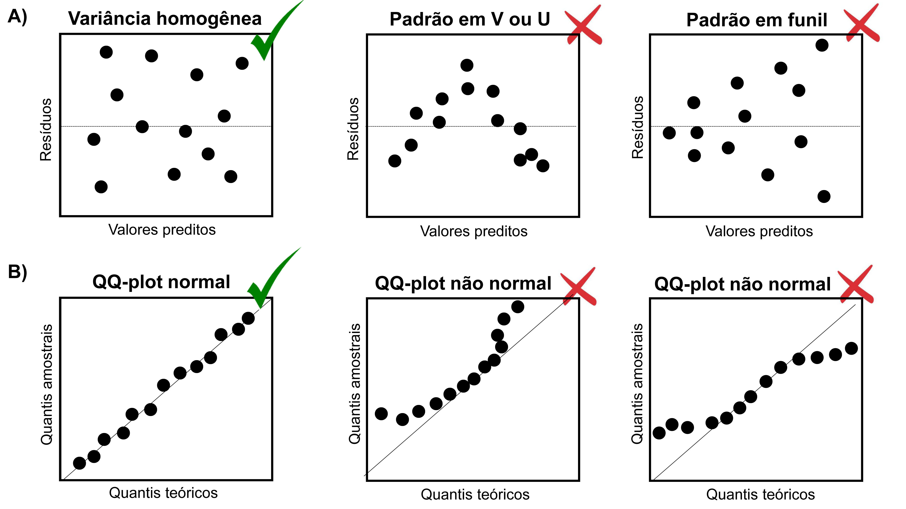
Figure 7.1: Inspeção gráfica da homogeneidade da variância (A) e normalidade dos resíduos (B). Os símbolos verdes indicam que os gráficos em que os resíduos apresentam distribuição homogênea e normal, enquanto os símbolos vermelhos indicam os gráficos em que os resíduos violam as premissas do teste.
Exemplo prático 1 - Teste T para duas amostras com variâncias iguais
Explicação dos dados
Neste exemplo, avaliaremos o comprimento rostro-cloacal (CRC em milímetros) de machos de Physalaemus nattereri (Anura:Leptodactylidae) amostrados em diferentes estações do ano com armadilhas de interceptação e queda na Região Noroeste do Estado de São Paulo (da Silva and Rossa-Feres 2010).
Pergunta
- O CRC dos machos de P. nattereri é maior na estação chuvosa do que na estação seca?
Predições
- O CRC dos machos será maior na estação chuvosa porque há uma vantagem seletiva para os indivíduos maiores durante a atividade reprodutiva
Variáveis
- Data frame com os indivíduos (unidade amostral) nas linhas e CRC (mm - variável resposta contínua) e estação (variável preditora categórica) como colunas
Checklist
- Verificar se o seu data frame está com as unidades amostrais nas linhas e variáveis preditoras e respostas nas colunas
Análise
Vamos olhar os dados usando a função head().
## Cabeçalho dos dados
head(CRC_PN_macho)
#> CRC Estacao
#> 1 3.82 Chuvosa
#> 2 3.57 Chuvosa
#> 3 3.67 Chuvosa
#> 4 3.72 Chuvosa
#> 5 3.75 Chuvosa
#> 6 3.83 ChuvosaVamos verificar a normalidade dos resíduos usando o QQ-plot (Figura 7.2).
## Teste de normalidade
residuos <- lm(CRC ~ Estacao, data = CRC_PN_macho)
qqPlot(residuos)
#> [1] 22 26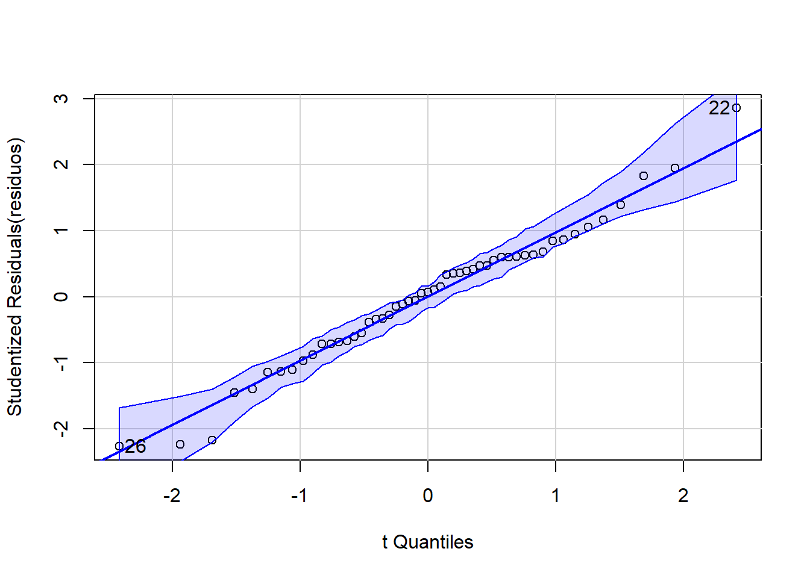
Figure 7.2: Normalidade dos resíduos usando o QQ-plot.
Os pontos estão próximos à reta, indicando que a distribuição dos resíduos é normal (veja Figura 7.1).
Outra possibilidade é usar os testes de Shapiro-Wilk e Levene para verificar a normalidade e a homogeneidade da variância, respectivamente.
📝 Importante
A Hipótese Nula (H0) destes testes é que a distribuição é normal ou homogênea:
- Valor de p < 0.05 significa que os dados não apresentam distribuição normal ou homogênea
- Valor de p > 0.05 significa que os dados apresentam distribuição normal ou homogênea
Teste de Shapiro-Wilk para normalidade dos resíduos.
## Teste de Shapiro-Wilk
residuos_modelo <- residuals(residuos)
shapiro.test(residuos_modelo)
#>
#> Shapiro-Wilk normality test
#>
#> data: residuos_modelo
#> W = 0.98307, p-value = 0.6746Teste de Levene para homogeneidade de variância dos resíduos.
## Teste de homogeneidade de variância
leveneTest(CRC ~ as.factor(Estacao), data = CRC_PN_macho)
#> Levene's Test for Homogeneity of Variance (center = median)
#> Df F value Pr(>F)
#> group 1 1.1677 0.2852
#> 49Percebam que a distribuição dos resíduos foi normal e homogênea na inspeção gráfica, assim como nos testes de Shapiro e Levene, respectivamente. Agora podemos realizar a análise sabendo que os dados seguem as premissas requeridas pelo Teste T.
Vamos para os códigos da análise do Teste T para amostragens independentes e variâncias iguais.
## Análise Teste T
t.test(CRC ~ Estacao, data = CRC_PN_macho, var.equal = TRUE)
#>
#> Two Sample t-test
#>
#> data: CRC by Estacao
#> t = 4.1524, df = 49, p-value = 0.000131
#> alternative hypothesis: true difference in means between group Chuvosa and group Seca is not equal to 0
#> 95 percent confidence interval:
#> 0.2242132 0.6447619
#> sample estimates:
#> mean in group Chuvosa mean in group Seca
#> 3.695357 3.260870Quatro valores devem ser apresentados aos leitores: i) estatística do teste - representada por t = 4,15, ii) valor de significância - representado por p-value = 0,0001, iii) graus de liberdade - representado por df = 49, e iv) diferença entre as médias. Veja abaixo como descrever os resultados no seu trabalho.
Visualizar os resultados em gráfico (Figura 7.3).
## Gráfico
ggplot(data = CRC_PN_macho, aes(x = Estacao, y = CRC, color = Estacao)) +
labs(x = "Estações",
y = expression(paste("CRC (mm) - ", italic("P. nattereri")))) +
geom_boxplot(fill = c("darkorange", "cyan4"), color = "black",
outlier.shape = NA) +
geom_jitter(shape = 16, position = position_jitter(0.1),
cex = 5, alpha = 0.7) +
scale_color_manual(values = c("black", "black")) +
tema_livro() +
theme(legend.position = "none")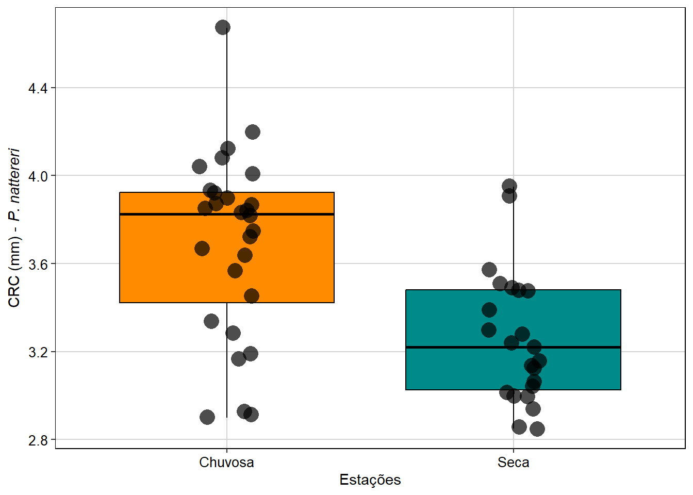
Figure 7.3: Boxplot da análise do Teste T para duas amostras com variâncias iguais.
Interpretação dos resultados
Neste exemplo, rejeitamos a hipótese nula de que as médias do CRC dos machos entre as estações seca e chuvosa são iguais. Os resultados mostram que os machos de P. nattereri coletados na estação chuvosa foram em média 0,43 mm maiores do que os machos coletados na estação seca (t49 = 4,15, P < 0,001).
Exemplo prático 2 - Teste T para duas amostras independentes com variâncias diferentes
Explicação dos dados
Neste exemplo, avaliaremos o comprimento rostro-cloacal (CRC - milímetros) de fêmeas de Leptodactylus podicipinus amostradas em diferentes estações do ano com armadilhas de interceptação e queda na Região Noroeste do Estado de São Paulo (da Silva and Rossa-Feres 2010).
📝 Importante
Os dados foram alterados em relação a publicação original para se enquadrarem no exemplo de amostras com variâncias diferentes.
Pergunta
- O CRC das fêmeas de L. podicipinus é maior na estação chuvosa do que na estação seca?
Predições
- O CRC das fêmeas será maior na estação chuvosa porque há uma vantagem seletiva para os indivíduos maiores durante a atividade reprodutiva
Variáveis
- Data frame com os indivíduos (unidade amostral) nas linhas e CRC (mm - variável resposta contínua) e estação (variável preditora categórica) como colunas
Checklist
- Verificar se o seu data frame está com as unidades amostrais nas linhas e variáveis preditoras e respostas nas colunas
Análise
Olhar os dados usando a função head().
## Cabeçalho dos dados
head(CRC_LP_femea)
#> CRC Estacao
#> 1 2.72 Chuvosa
#> 2 2.10 Chuvosa
#> 3 3.42 Chuvosa
#> 4 1.50 Chuvosa
#> 5 3.90 Chuvosa
#> 6 4.00 ChuvosaVamos avaliar as premissas do teste. Começando com o teste de normalidade (Figura 7.4).
## Teste de normalidade usando QQ-plot
residuos_LP <- lm(CRC ~ Estacao, data = CRC_LP_femea)
qqPlot(residuos_LP)
#> [1] 4 6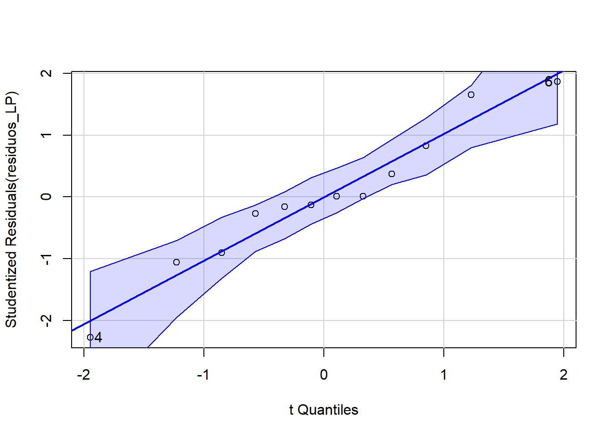
Figure 7.4: Normalidade dos resíduos usando o QQ-plot.
Os resíduos apresentam distribuição normal. Vamos testar também com o Shapiro-Wilk para normalidade dos resíduos.
## Teste de Shapiro-Wilk
residuos_modelo_LP <- residuals(residuos_LP)
shapiro.test(residuos_modelo_LP)
#>
#> Shapiro-Wilk normality test
#>
#> data: residuos_modelo_LP
#> W = 0.96272, p-value = 0.8219Agora vamos avaliar a homogeneidade da variância.
## Teste de homogeneidade da variância
leveneTest(CRC ~ as.factor(Estacao), data = CRC_LP_femea)
#> Levene's Test for Homogeneity of Variance (center = median)
#> Df F value Pr(>F)
#> group 1 9.8527 0.01053 *
#> 10
#> ---
#> Signif. codes:
#> 0 '***' 0.001 '**' 0.01 '*' 0.05 '.' 0.1 ' ' 1Os resíduos não apresentam homogeneidade da variância. Portanto, vamos realizar o Teste T com variâncias diferentes. Para isso, use o argumento var.equal = FALSE.
## Teste T
t.test(CRC ~ Estacao, data = CRC_LP_femea, var.equal = FALSE)
#>
#> Welch Two Sample t-test
#>
#> data: CRC by Estacao
#> t = -1.7633, df = 6.4998, p-value = 0.1245
#> alternative hypothesis: true difference in means between group Chuvosa and group Seca is not equal to 0
#> 95 percent confidence interval:
#> -1.5489301 0.2375016
#> sample estimates:
#> mean in group Chuvosa mean in group Seca
#> 2.834286 3.490000Neste exemplo, não rejeitamos a hipótese nula e consideramos que as médias do CRC das fêmeas entre as estações seca e chuvosa são iguais (t6,49 = 1,76, P = 0,12).
Vamos visualizar os resultados em um gráfico (Figura 7.5).
## Gráfico
ggplot(data = CRC_LP_femea, aes(x = Estacao, y = CRC, color = Estacao)) +
geom_boxplot(fill = c("darkorange", "cyan4"), width = 0.5,
color = "black", outlier.shape = NA, alpha = 0.7) +
geom_jitter(shape = 20, position = position_jitter(0.2), color = "black", cex = 5) +
scale_color_manual(values = c("darkorange", "cyan4")) +
labs(x = "Estações",
y = expression(paste("CRC (mm) - ", italic("L. podicipinus"))), size = 15) +
tema_livro() +
theme(legend.position = "none")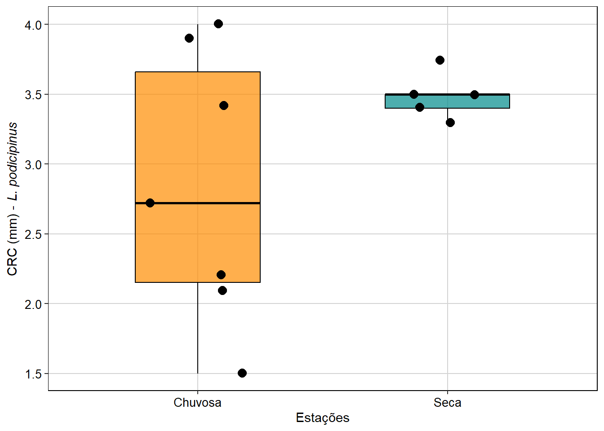
Figure 7.5: Boxplot da análise do Teste T para duas amostras independentes com variâncias diferentes.
Interpretação dos resultados
Os resultados mostram que as fêmeas de L. podicipinus coletadas na estação chuvosa não são maiores do que as fêmeas coletadas na estação seca, apesar de possuírem maior variância, o que pode ser biologicamente interessante.
7.2 Teste T para amostras pareadas
O Teste T Pareado é uma estatística que usa dados medidos duas vezes na mesma unidade amostral, resultando em pares de observações para cada amostra (amostras pareadas). Ele determina se a diferença da média entre duas observações é zero.
\[t = \frac{\bar{d}}{S_{\bar{d}}}\]
Onde: - \(\bar{d}\) = média da diferença das medidas pareadas. Observe que o teste não usa as medidas originais, e sim, a diferença para cada par - S\(\bar{d}\) = erro padrão da diferença das medidas pareadas
Premissas do Teste t para amostras pareadas
- As unidades amostrais são selecionadas aleatoriamente
- As observações não são independentes
- Distribuição normal (gaussiana) dos valores da diferença para cada par
Exemplo prático 1 - Teste T para amostras pareadas
Explicação dos dados
Neste exemplo, avaliaremos a diferença na riqueza de espécies de artrópodes registradas em 27 localidades. Todas as localidades foram amostradas duas vezes. A primeira amostragem foi realizada na localidade antes da perturbação e a segunda amostragem foi realizada após a localidade ter sofrido uma queimada. Portanto, existe uma dependência temporal, uma vez que amostramos a mesma localidade antes e depois da queimada.
Pergunta
- A riqueza de espécies de artrópodes é prejudicada pelas queimadas?
Predições
- A riqueza de espécies de artrópodes será maior antes da queimada devido a extinção local das espécies
Variáveis
- data frame com as localidades nas linhas e riqueza de espécies (variável resposta contínua) e estado (Pré-queimada ou Pós-queimada - variável preditora categórica) da localidade nas colunas
Checklist
- Verificar se o seu data frame está com as unidades amostrais nas linhas e variáveis preditoras e respostas nas colunas
Análise
Olhando os dados com a função head().
## Cabeçalho dos dados
head(Pareado)
#> Areas Riqueza Estado
#> 1 1 92 Pre-Queimada
#> 2 2 74 Pre-Queimada
#> 3 3 96 Pre-Queimada
#> 4 4 89 Pre-Queimada
#> 5 5 76 Pre-Queimada
#> 6 6 80 Pre-QueimadaCálculo do Teste T com amostras pareadas.
## Análise Teste T Pareado
t.test(
x = Pareado$Riqueza[Pareado$Estado == "Pre-Queimada"],
y = Pareado$Riqueza[Pareado$Estado == "Pos-Queimada"],
paired = TRUE
)
#>
#> Paired t-test
#>
#> data: Pareado$Riqueza[Pareado$Estado == "Pre-Queimada"] and Pareado$Riqueza[Pareado$Estado == "Pos-Queimada"]
#> t = 7.5788, df = 26, p-value = 4.803e-08
#> alternative hypothesis: true mean difference is not equal to 0
#> 95 percent confidence interval:
#> 32.47117 56.63994
#> sample estimates:
#> mean difference
#> 44.55556Neste exemplo, rejeitamos a hipótese nula de que a riqueza de espécies de artrópodes é igual antes e depois da queimada (t26 = 7,57, P < 0,001).
Podemos visualizar os resultados em gráfico (Figura 7.6).
## Gráfico
ggpaired(Pareado, x = "Estado", y = "Riqueza",
color = "Estado", line.color = "gray", line.size = 0.8,
palette = c("darkorange", "cyan4"), width = 0.5,
point.size = 4, xlab = "Estado das localidades",
ylab = "Riqueza de Espécies") +
expand_limits(y = c(0, 150)) +
tema_livro() 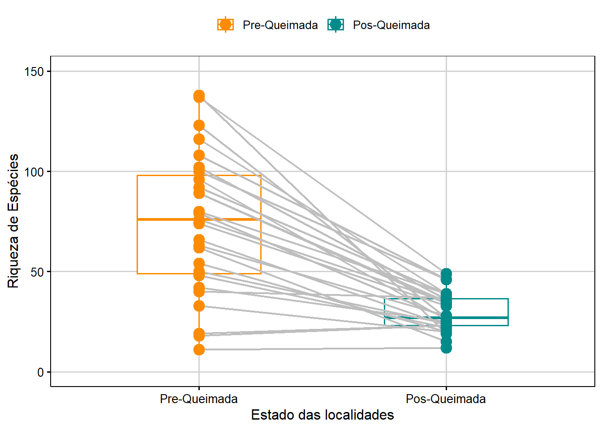
Figure 7.6: Boxplot da análise do Teste T para duas amostras pareadas.
Interpretação dos resultados
Os resultados mostram que as localidades após as queimadas apresentam em média 44,5 espécies de artrópodes a menos do que antes das queimadas.
7.3 Correlação de Pearson
É um teste que mede a força relativa da relação linear entre duas variáveis contínuas (X e Y). Importante ressaltar que a análise de correlação não assume que a variável X influencie a variável Y, ou que exista uma relação de causa e efeito entre elas (Zar 2010). A análise é definida em termos da variância de X, a variância de Y, e a covariância de X e Y (i.e. como elas variam juntas).
\[r = \frac{\sum{XY} - \frac{\sum{X} \sum{Y}}{n}}{\sqrt{\left(\sum{X^2} - \frac{\sum{X}^2}{n}\right)\left(\sum{Y^2} - \frac{\sum{Y}^2}{n}\right)}}\]
Onde:
- r = coeficiente de correlação que indica a força da relação linear entre as duas variáveis. Seu limite de valores está entre -1 \(\leq\) r \(\le\) 1. A correlação positiva indica que o aumento no valor de uma das variáveis é acompanhado pelo aumento no valor da outra variável. A correlação negativa indica que o aumento no valor de uma das variáveis é acompanhado pela diminuição no valor da outra variável. Se r é igual a zero, não existe correlação entre as variáveis (Figura 7.7).
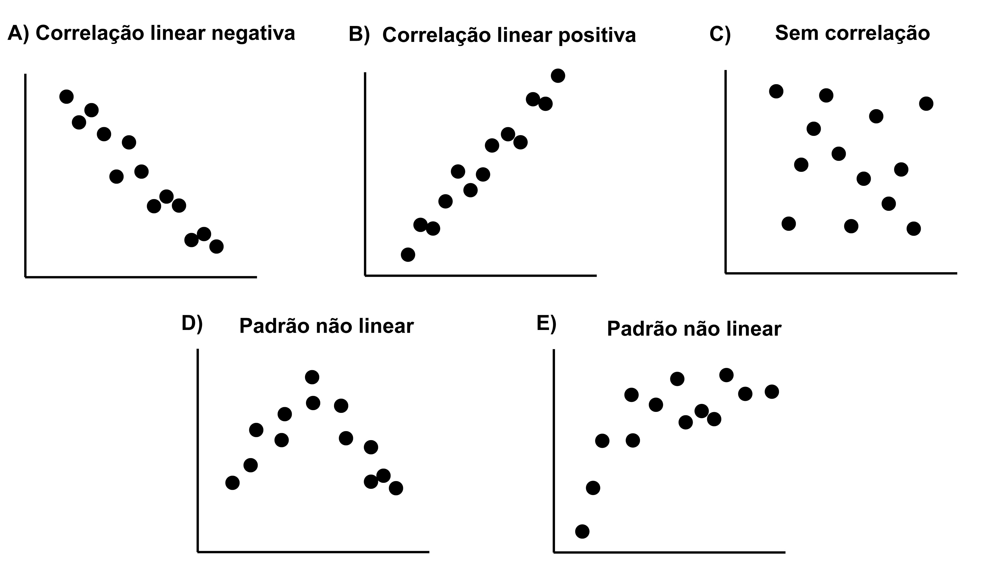
Figure 7.7: Exemplo de correlações negativa (A), positiva (B) e nula (C) e variáveis que não apresentam relações lineares entre si (D-E).
Premissas da Correlação de Person
- As amostras devem ser independentes e pareadas (i.e., as duas variáveis devem ser medidas na mesma unidade amostral)
- As unidades amostrais são selecionadas aleatoriamente
- A relação entre as variáveis tem que ser linear
Exemplo prático 1 - Correlação de Pearson
Explicação dos dados
Neste exemplo, avaliaremos a correlação entre a altura do tronco e o tamanho da raiz medidos em 35 indivíduos de uma espécie vegetal arbustiva.
Pergunta
- Existe correlação entre a altura do tronco e o tamanho da raiz dos arbustos?
Predições
- A altura do tronco é positivamente correlacionada com o tamanho da raiz
Variáveis
- data frame com os indivíduos (unidade amostral) nas linhas e altura do tronco e tamanho da raiz (duas variáveis têm que ser contínuas) como colunas
Checklist
- Verificar se o seu data frame está com as unidades amostrais nas linhas e variáveis preditoras e respostas nas colunas
Análise
Vamos olhar os dados com a função head().
## Cabeçalho dos dados
head(correlacao_arbustos)
#> Tamanho_raiz Tamanho_tronco
#> 1 10.177049 19.54383
#> 2 6.622634 17.13558
#> 3 7.773629 19.50681
#> 4 11.055257 21.57085
#> 5 4.487274 13.22763
#> 6 11.190216 21.62902Cálculo do Teste da Correlação de Pearson. Para outros testes de correlação como Kendall ou Spearman é só alterar o argumento method e inserir o teste desejado.
## Correlação de Pearson
cor.test(correlacao_arbustos$Tamanho_raiz, correlacao_arbustos$Tamanho_tronco, method = "pearson")
#>
#> Pearson's product-moment correlation
#>
#> data: correlacao_arbustos$Tamanho_raiz and correlacao_arbustos$Tamanho_tronco
#> t = 11.49, df = 33, p-value = 4.474e-13
#> alternative hypothesis: true correlation is not equal to 0
#> 95 percent confidence interval:
#> 0.7995083 0.9457816
#> sample estimates:
#> cor
#> 0.8944449
## Alternativamente
cor.test(~ Tamanho_tronco + Tamanho_raiz, data = correlacao_arbustos, method = "pearson")
#>
#> Pearson's product-moment correlation
#>
#> data: Tamanho_tronco and Tamanho_raiz
#> t = 11.49, df = 33, p-value = 4.474e-13
#> alternative hypothesis: true correlation is not equal to 0
#> 95 percent confidence interval:
#> 0.7995083 0.9457816
#> sample estimates:
#> cor
#> 0.8944449Neste exemplo, rejeitamos a hipótese nula de que as variáveis não são correlacionadas (r = 0.89, P < 0,001).
Podemos visualizar os resultados em gráfico (Figura 7.8).
## Gráfico
ggplot(data = correlacao_arbustos, aes(x = Tamanho_raiz, y = Tamanho_tronco)) +
labs(x = "Tamanho da raiz (m)", y = "Altura do tronco (m)") +
geom_point(size = 4, shape = 21, fill = "darkorange", alpha = 0.7) +
geom_text(x = 14, y = 14, label = "r = 0.89, P < 0.001",
color = "black", size = 5) +
geom_smooth(method = lm, se = FALSE, color = "black", linetype = "dashed") +
tema_livro() +
theme(legend.position = "none")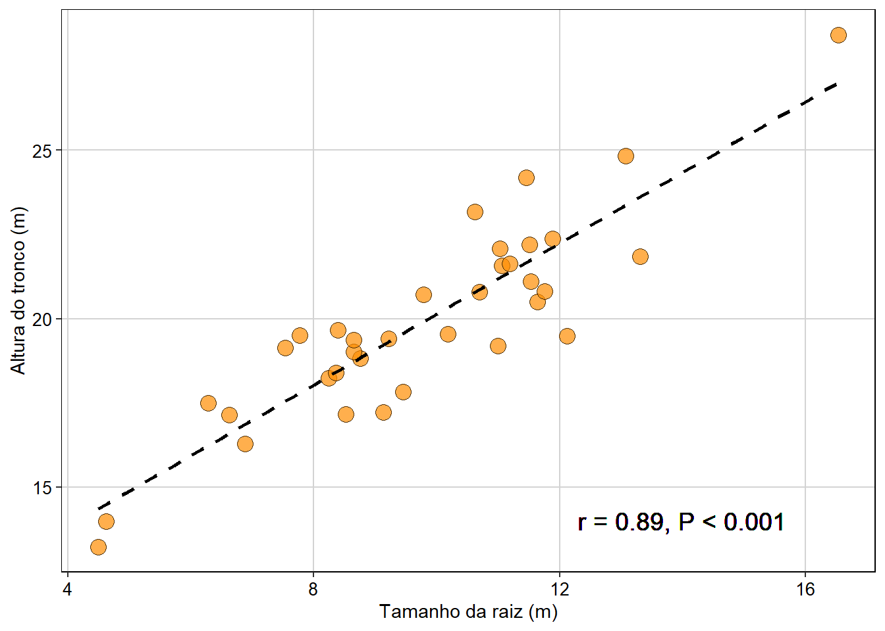
Figure 7.8: Gráfico mostrando a relação entre as variáveis e uma linha de tendência dos dados.
📝 Importante
A linha de tendência tracejada no gráfico é apenas para ilustrar a relação positiva entre as variáveis. Ela não é gerada pela análise de correlação.
Interpretação dos resultados
Os resultados mostram que o aumento na altura dos arbustos é acompanhado pelo aumento no tamanho da raiz.
7.4 Regressão Linear Simples
A regressão linear simples é usada para analisar a relação entre uma variável preditora (plotada no eixo-X) e uma variável resposta (plotada no eixo-Y). As duas variáveis devem ser contínuas. Diferente das correlações, a regressão assume uma relação de causa e efeito entre as variáveis. O valor da variável preditora (X) causa, direta ou indiretamente, o valor da variável resposta (Y). Assim, Y é uma função linear de X:
\[Y = \beta_0 + \beta_{1}X_i + \epsilon_i\]
Onde:
- \(\beta_0\) = intercepto (intercept) que representa o valor da função quando X = 0
- \(\beta_{1}\) = inclinação (slope) que mede a mudança na variável Y para cada mudança de unidade da variável X
- \(\epsilon_{1}\) = erro aleatório referente à variável Y que não pode ser explicado pela variável X
Premissas da Regressão Linear Simples
- As amostras devem ser independentes
- As unidades amostrais são selecionadas aleatoriamente
- Distribuição normal (gaussiana) dos resíduos
- Homogeneidade da variância dos resíduos
Exemplo prático 1 - Regressão Linear Simples
Explicação dos dados
Neste exemplo, avaliaremos a relação entre o gradiente de temperatura média anual (°C) e o tamanho médio do comprimento rostro-cloacal (CRC em mm) de populações de Dendropsophus minutus (Anura:Hylidae) amostradas em 109 localidades no Brasil (Boaratti and Da Silva 2015).
Pergunta
- A temperatura afeta o tamanho do CRC de populações de Dendropsophus minutus?
Predições
- Os CRC das populações serão menores em localidades mais quentes do que em localidades mais frias de acordo com a Hipótese do Balanço de Calor (Olalla-Tárraga and Rodríguez 2007)
Variáveis
- Data frame com as populações (unidade amostral) nas linhas e CRC (variável resposta) médio (mm) e temperatura média anual (variável preditora) como colunas
Checklist
- Verificar se o seu data frame está com as unidades amostrais nas linhas e variáveis preditoras e respostas nas colunas
Análise
Olhando os dados com a função head().
## Cabeçalho dos dados
head(dados_regressao)
#> Municipio CRC Temperatura Precipitacao
#> 1 Acorizal 22.98816 24.13000 1228.2
#> 2 Alpinopolis 22.91788 20.09417 1487.6
#> 3 Alto_Paraiso 21.97629 21.86167 1812.4
#> 4 Americana 23.32453 20.28333 1266.2
#> 5 Apiacas 22.83651 25.47333 2154.0
#> 6 Arianopolis 20.86989 20.12167 1269.2Vamos calcular a regressão linear simples.
## regressão simples
modelo_regressao <- lm(CRC ~ Temperatura, data = dados_regressao)Antes de vermos os resultados, vamos verificar a normalidade e homogeneidade das variâncias (Figura 7.9).
## Verificar as premissas do teste
par(mfrow = c(2, 2), oma = c(0, 0, 2, 0))
plot(modelo_regressao)
dev.off() # volta a configuração dos gráficos para o formato padrão
#> null device
#> 1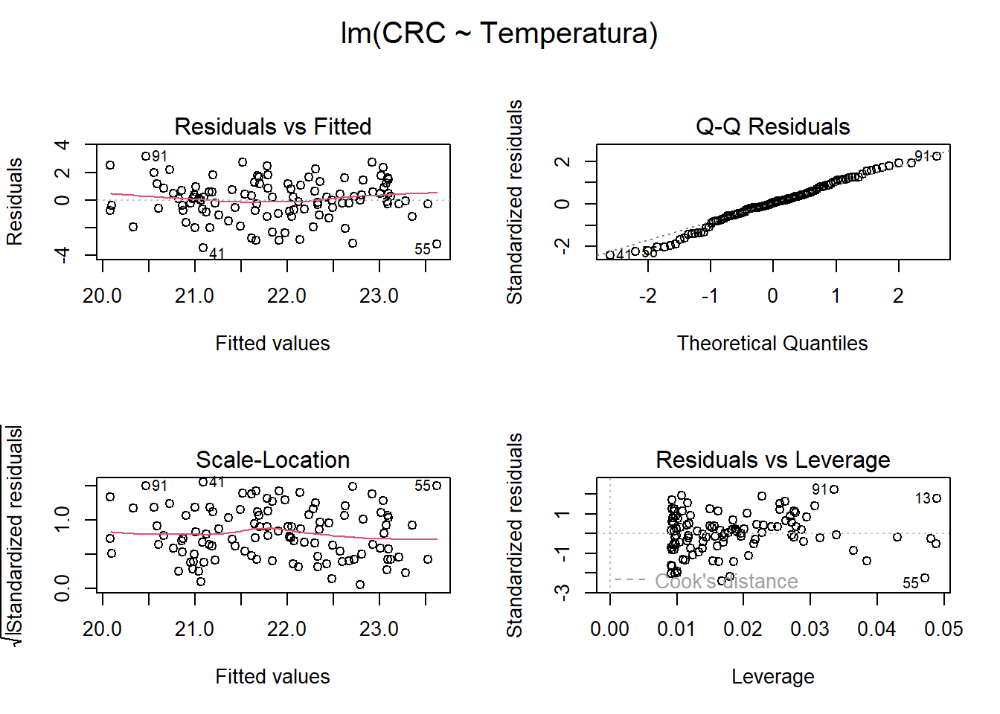
Figure 7.9: Gráficos mostrando as premissas da regressão linear simples.
Os gráficos Residuals vs Fitted, Scale-Location, e Residual vs Leverage estão relacionados com a homogeneidade da variância. Nestes gráficos, esperamos ver os pontos dispersos no espaço sem padrões com formatos em U ou funil. Neste caso, vemos que as linhas vermelhas (que indicam a tendência dos dados) estão praticamente retas, seguindo a linha pontilhada, sugerindo que não exista heterogeneidade de variância dos resíduos. O gráfico Residual vs Leverage, identifica os valores extremos que estejam a mais de uma unidade da distância de Cook (linha pontilhada vermelha). Quando muito discrepantes, esses valores podem influenciar os resultados dos testes estatísticos. Também não temos problemas com esse pressuposto do modelo aqui. O gráfico Normal Q-Q (quantile-quantile plot) mede desvios da normalidade. Neste caso, esperamos que os pontos sigam uma linha reta (i.e. fiquem muito próximos da linha pontilhada) e não apresentem padrões com formatos de S ou arco. Podemos observar que tanto a normalidade como a homogeneidade do resíduos estão dentro dos padrões esperados.
Vamos ver os resultados da regressão simples usando as funções anova() e summary(). A função anova() retorna uma tabela contendo o grau de liberdade (df), soma dos quadrados, valor de F e o valor de P.
## Resultados usando a função anova
anova(modelo_regressao)
#> Analysis of Variance Table
#>
#> Response: CRC
#> Df Sum Sq Mean Sq F value
#> Temperatura 1 80.931 80.931 38.92
#> Residuals 107 222.500 2.079
#> Pr(>F)
#> Temperatura 9.011e-09 ***
#> Residuals
#> ---
#> Signif. codes:
#> 0 '***' 0.001 '**' 0.01 '*' 0.05 '.' 0.1 ' ' 1A função summary() retorna uma tabela contendo o valor do intercepto, inclinação da reta (slope) e o coeficiente de determinação (R2) que indica a proporção da variação na variável Y que pode ser atribuída à variação na variável X. Percebam que a parte final dos resultados apresentados no summary() são os mesmo apresentados pela função anova().
## Resultados usando a função summary
summary(modelo_regressao)
#>
#> Call:
#> lm(formula = CRC ~ Temperatura, data = dados_regressao)
#>
#> Residuals:
#> Min 1Q Median 3Q Max
#> -3.4535 -0.7784 0.0888 0.9168 3.1868
#>
#> Coefficients:
#> Estimate Std. Error t value Pr(>|t|)
#> (Intercept) 16.23467 0.91368 17.768 < 2e-16
#> Temperatura 0.26905 0.04313 6.239 9.01e-09
#>
#> (Intercept) ***
#> Temperatura ***
#> ---
#> Signif. codes:
#> 0 '***' 0.001 '**' 0.01 '*' 0.05 '.' 0.1 ' ' 1
#>
#> Residual standard error: 1.442 on 107 degrees of freedom
#> Multiple R-squared: 0.2667, Adjusted R-squared: 0.2599
#> F-statistic: 38.92 on 1 and 107 DF, p-value: 9.011e-09Vamos visualizar os resultados em gráfico (Figura 7.10).
## Gráfico
ggplot(data = dados_regressao, aes(x = Temperatura, y = CRC)) +
labs(x = "Temperatura média anual (°C)",
y = "Comprimento rostro-cloacal (mm)") +
geom_point(size = 4, shape = 21, fill = "darkorange", alpha = 0.7) +
geom_smooth(method = lm, se = FALSE, color = "black") +
tema_livro() +
theme(legend.position = "none")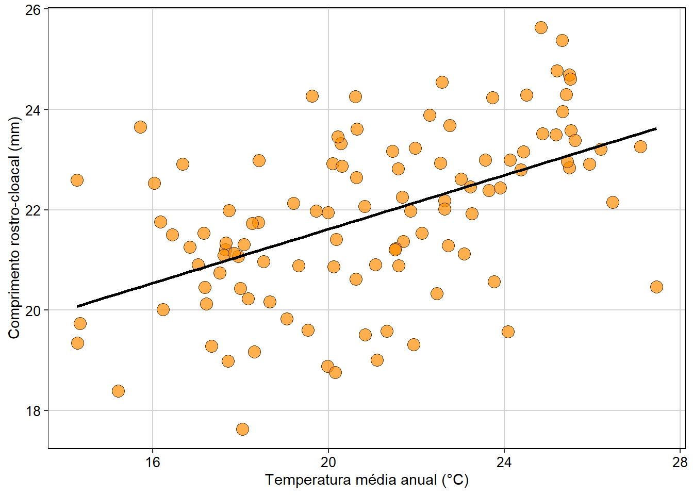
Figure 7.10: Gráfico mostrando a relação entre as variáveis e modelo linear simples, representado pela linha contínua.
Interpretação dos resultados
Neste exemplo, rejeitamos a hipótese nula de que não existe relação entre o tamanho do CRC das populações de D. minutus e a temperatura da localidade onde elas ocorrem (F1,107 = 38,92, P < 0,001). Os resultados mostram que o tamanho do CRC das populações tem uma relação positiva com a temperatura das localidades. Assim, populações de D. minutus em localidades mais quentes apresentam maior CRC do que as populações em localidades mais frias. Podemos também usar os coeficientes da regressão para entender como a mudança na variável preditora (temperatura) afeta o tamanho corporal médio dos anuros. Neste caso, ao usar o comando coef(modelo_regressao), obtemos os valores 16,23 e 0,27, respectivamente os valores do intercepto (β0) e da temperatura (β1). O valor de 0,27 indica que a mudança de uma unidade na variável preditora (neste caso, graus), aumenta em 0,27 unidades (neste caso, centímetros) da variável dependente. Por exemplo, o modelo indica que o tamanho médio dos indivíduos em locais com temperatura de 16º C é de 20,55 cm, ao passo que em locais com 26º C o tamanho aumenta para 23,25 cm, o que representa um ganho de 13%.
7.5 Regressão Linear Múltipla
A regressão linear múltipla é uma extensão da regressão linear simples. Ela é usada quando queremos determinar o valor da variável resposta (Y) com base nos valores de duas ou mais variáveis preditoras (X1, X2, Xn).
\[Y = \beta_0 + \beta_{1}X_1 + \beta_{n}X_n + \epsilon_i\]
Onde:
- \(\beta_0\) = intercepto (intercept) que representa o valor da função quando X = 0
- \(\beta_{n}\) = inclinação (slope) que mede a mudança na variável Y para cada mudança de unidade das variáveis Xn
- \(\epsilon_{1}\) = erro aleatório referente a variável Y que não pode ser explicado pelas variáveis preditoras
Premissas da Regressão Linear Múltipla
- As amostras devem ser independentes
- As unidades amostrais são selecionadas aleatoriamente
- Distribuição normal (gaussiana) dos resíduos
- Homogeneidade da variância dos resíduos
Exemplo prático 1 - Regressão Linear Múltipla
Explicação dos dados
Utilizaremos o mesmo exemplo da regressão linear simples. Contudo, além do gradiente de temperatura média anual (°C), incluiremos o gradiente de precipitação anual (mm) como outra variável preditora do tamanho médio do comprimento rostro-cloacal (CRC em mm) de populações de Dendropsophus minutus (Anura:Hylidae) amostradas em 109 localidades no Brasil (Boaratti and Da Silva 2015).
Pergunta
- O tamanho do CRC das populações de D. minutus é influenciado pela temperatura e precipitação das localidades onde os indivíduos ocorrem?
Predições
- Os CRC das populações serão menores em localidades com clima quente e chuvoso do que em localidades com clima frio e seco
Variáveis
- data frame com as populações (unidade amostral) nas linhas e CRC (variável resposta) médio (mm) e temperatura e precipitação (variáveis preditoras) como colunas
Checklist
- Verificar se o seu data frame está com as unidades amostrais nas linhas e variáveis preditoras e respostas nas colunas
Análise
Olhando os dados usando a função head().
## Cabeçalho dos dados
head(dados_regressao_mul)
#> Municipio CRC Temperatura Precipitacao
#> 1 Acorizal 22.98816 24.13000 1228.2
#> 2 Alpinopolis 22.91788 20.09417 1487.6
#> 3 Alto_Paraiso 21.97629 21.86167 1812.4
#> 4 Americana 23.32453 20.28333 1266.2
#> 5 Apiacas 22.83651 25.47333 2154.0
#> 6 Arianopolis 20.86989 20.12167 1269.2Códigos para ajustar o modelo de regressão múltipla.
## Regressão múltipla
modelo_regressao_mul <- lm(CRC ~ Temperatura + Precipitacao,
data = dados_regressao_mul) 📝 Importante
Multicolinearidade ocorre quando as variáveis preditoras são correlacionadas. Essa correlação é um problema porque as variáveis preditoras deveriam ser independentes. Além disso, a multicolinearidade aumentam o erro padrão associado aos coeficientes produzindo resultados menos confiáveis. O Fator de Inflação da Variância (VIF) é um teste que quantifica quanto do erro padrão dos coeficientes estimados estão inflados devido à multicolinearidade. Na regressão múltipla, cada variável preditora tem um valor de VIF. Alguns autores consideram valores de VIF acima de 10 como fortemente correlacionadas, outros mais conservadores consideram o valor de 5, 3 ou até mesmo 2. Mais detalhes em Zuur et al. (2010) e Dormann et al. (2013).
Vamos analisar se as variáveis apresentam multicolinearidade.
# Multicolinearidade
vif(modelo_regressao_mul)
#> Temperatura Precipitacao
#> 1.041265 1.041265Os valores são menores que 3, indicando que não há multicolinearidade.
Agora vamos verificar as premissas de normalidade e homogeneidade das variâncias (Figura 7.11).
## Normalidade e homogeneidade das variâncias
plot_grid(plot_model(modelo_regressao_mul , type = "diag"))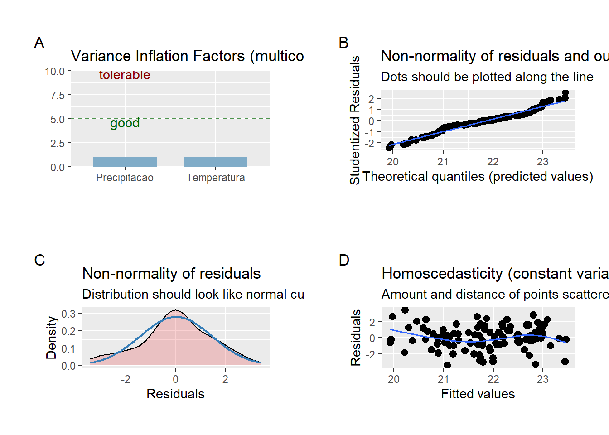
Figure 7.11: Gráficos mostrando as premissas da regressão linear múltipla.
Os resíduos apresentam distribuição normal e variâncias homogêneas.
Podemos ver os resultados da análise.
## regressão múltipla
summary(modelo_regressao_mul)
#>
#> Call:
#> lm(formula = CRC ~ Temperatura + Precipitacao, data = dados_regressao_mul)
#>
#> Residuals:
#> Min 1Q Median 3Q Max
#> -3.4351 -0.8026 0.0140 0.9420 3.4300
#>
#> Coefficients:
#> Estimate Std. Error t value
#> (Intercept) 16.7162571 1.0108674 16.537
#> Temperatura 0.2787445 0.0439601 6.341
#> Precipitacao -0.0004270 0.0003852 -1.108
#> Pr(>|t|)
#> (Intercept) < 2e-16 ***
#> Temperatura 5.71e-09 ***
#> Precipitacao 0.27
#> ---
#> Signif. codes:
#> 0 '***' 0.001 '**' 0.01 '*' 0.05 '.' 0.1 ' ' 1
#>
#> Residual standard error: 1.44 on 106 degrees of freedom
#> Multiple R-squared: 0.2751, Adjusted R-squared: 0.2614
#> F-statistic: 20.12 on 2 and 106 DF, p-value: 3.927e-08Percebam que a temperatura tem uma relação significativa e positiva com o tamanho do CRC das populações (P < 0.001), enquanto a precipitação não apresenta relação com o CRC (P = 0.27). Neste caso, é interessante saber se um modelo mais simples (e.g. contendo apenas temperatura) explicaria a distribuição tão bem ou melhor do que este modelo mais complexo considerando duas variáveis (temperatura e precipitação).
Para isso, podemos utilizar a Likelihood-ratio test (LRT) para comparar os modelos. A LRT compara dois modelos aninhados, testando se os parâmetros do modelo mais complexo diferem significativamente do modelo mais simples. Em outras palavras, ele testa se há necessidade de se incluir uma variável extra no modelo para explicar os dados.
## Criando os modelos aninhados
modelo_regressao_mul <- lm(CRC ~ Temperatura + Precipitacao,
data = dados_regressao_mul)
modelo_regressao <- lm(CRC ~ Temperatura, data = dados_regressao_mul)
## Likelihood-ratio test (LRT)
lrtest(modelo_regressao_mul, modelo_regressao)
#> Likelihood ratio test
#>
#> Model 1: CRC ~ Temperatura + Precipitacao
#> Model 2: CRC ~ Temperatura
#> #Df LogLik Df Chisq Pr(>Chisq)
#> 1 4 -192.93
#> 2 3 -193.55 -1 1.2558 0.2624 📝 Importante
A Hipótese Nula (H0) do teste Likelihood-ratio test (LRT) é de que o modelo mais simples é o melhor.
- Valor de p < 0.05 rejeita a hipótese nula e o modelo mais complexo é o melhor
- Valor de p > 0.05 não rejeita a hipótese nula e o modelo mais simples é o melhor
## Comparando com o modelo somente com o intercepto
# Criando um modelo sem variáveis, só o intercepto.
modelo_intercepto <- lm(CRC ~ 1, data = dados_regressao_mul)
lrtest(modelo_regressao, modelo_intercepto)
#> Likelihood ratio test
#>
#> Model 1: CRC ~ Temperatura
#> Model 2: CRC ~ 1
#> #Df LogLik Df Chisq Pr(>Chisq)
#> 1 3 -193.55
#> 2 2 -210.46 -1 33.815 6.061e-09 ***
#> ---
#> Signif. codes:
#> 0 '***' 0.001 '**' 0.01 '*' 0.05 '.' 0.1 ' ' 1Interpretação dos resultados
Neste exemplo, a precipitação não está associada com a variação no tamanho do CRC das populações de D. minutus. Por outro lado, a temperatura explicou 26% da variação do tamanho do CRC das populações.
7.6 Análises de Variância (ANOVA)
ANOVA refere-se a uma variedade de delineamentos experimentais nos quais a variável preditora é categórica e a variável resposta é contínua (Gotelli and Ellison 2012). Exemplos desses delineamentos experimentais são: ANOVA de um fator, ANOVA de dois fatores, ANOVA em blocos aleatorizados, ANOVA de medidas repetidas e ANOVA split-splot. De forma geral, a ANOVA é um teste estatístico usado para comparar a média entre grupos amostrados independentemente. Para isso, o teste leva em conta, além das médias dos grupos, a variação dos dados dentro e entre os grupos. Neste capítulo, iremos demonstrar os códigos para alguns dos principais delineamentos experimentais.
Premissas da ANOVA
- As amostras devem ser independentes
- As unidades amostrais são selecionadas aleatoriamente
- Distribuição normal (gaussiana) dos resíduos
- Homogeneidade da variância
📝 Importante
ANOVA de medidas repetidas e ANOVA split-plot são análises com desenhos experimentais que apresentam dependência entre as amostras, mas controlam essa dependência nas suas formulações matemáticas.
7.6.1 ANOVA de um fator
Este teste considera delineamentos experimentais com apenas um fator (ou tratamento) que pode ser composto por três ou mais grupos (ou níveis).
Exemplo prático 1 - Anova de um fator
Explicação dos dados
Neste exemplo hipotético, avaliaremos se o adubo X-2020 disponibilizado recentemente no mercado melhora o crescimento dos indivíduos de Coffea arabica como divulgado pela empresa responsável pela venda do produto. Para isso, foi realizado um experimento com indivíduos de C. arabica cultivados em três grupos: i) grupo controle onde os indivíduos não receberam adubação, ii) grupo onde os indivíduos receberam a adição do adubo tradicional mais utilizado pelos produtores de C. arabica, e iii) grupo onde os indivíduos receberam a adição do adubo X-2020.
Pergunta
- O crescimento dos indivíduos de C. arabica é melhorado pela adição do adubo X-2020?
Predições
- O crescimento dos indivíduos de C. arabica será maior no grupo que recebeu o adubo X-2020
Variáveis
- Data frame com as plantas (unidade amostral) nas linhas e o crescimento dos indivíduos de C. arabica (variável resposta) e os tratamentos (variável preditora) nas colunas
Checklist
- Verificar se o seu data frame está com as unidades amostrais nas linhas e variável preditora e resposta nas colunas
Análise
Olhando os dados e criando o modelo para Anova de um fator.
## Cabeçalho dos dados
head(dados_anova_simples)
#> Crescimento Tratamento
#> 1 7.190 Controle
#> 2 6.758 Controle
#> 3 6.101 Controle
#> 4 4.758 Controle
#> 5 6.542 Controle
#> 6 7.667 Controle
## Análise ANOVA de um fator
Modelo_anova <- aov(Crescimento ~ Tratamento, data = dados_anova_simples) Vamos verificar a normalidade dos resíduos e homogeneidade da variância usando os testes de Shapiro-Wilk e Bartlett, respectivamente.
## Normalidade
shapiro.test(residuals(Modelo_anova))
#>
#> Shapiro-Wilk normality test
#>
#> data: residuals(Modelo_anova)
#> W = 0.94676, p-value = 0.08266
## Homogeneidade da variância
bartlett.test(Crescimento ~ Tratamento, data = dados_anova_simples)
#>
#> Bartlett test of homogeneity of variances
#>
#> data: Crescimento by Tratamento
#> Bartlett's K-squared = 0.61835, df = 2,
#> p-value = 0.7341Os resíduos apresentam distribuição normal e homogeneidade de variância.
Vamos ver os resultados da análise.
## Resultados da anova
anova(Modelo_anova)
#> Analysis of Variance Table
#>
#> Response: Crescimento
#> Df Sum Sq Mean Sq F value Pr(>F)
#> Tratamento 2 340.32 170.160 77.989 3.124e-13
#> Residuals 33 72.00 2.182
#>
#> Tratamento ***
#> Residuals
#> ---
#> Signif. codes:
#> 0 '***' 0.001 '**' 0.01 '*' 0.05 '.' 0.1 ' ' 1Percebam que o resultado da ANOVA (Pr(>F) < 0.001) indica que devemos rejeitar a hipótese nula que não há diferença entre as médias dos grupos. Contudo, os resultados não mostram quais são os grupos que apresentam diferenças. Para isso, temos que realizar testes de comparações múltiplas post-hoc para detectar os grupos que apresentam diferenças significativas entre as médias.
📝 Importante
Os testes post-hoc só devem ser utilizados quando rejeitamos a hipótese nula (P < 0.05) no teste da ANOVA.
## Diferenças entre os tratamentos
# Teste de Tuckey's honest significant difference
TukeyHSD(Modelo_anova)
#> Tukey multiple comparisons of means
#> 95% family-wise confidence level
#>
#> Fit: aov(formula = Crescimento ~ Tratamento, data = dados_anova_simples)
#>
#> $Tratamento
#> diff
#> Adubo_X-2020-Adubo_Tradicional 0.04991667
#> Controle-Adubo_Tradicional -6.49716667
#> Controle-Adubo_X-2020 -6.54708333
#> lwr
#> Adubo_X-2020-Adubo_Tradicional -1.429784
#> Controle-Adubo_Tradicional -7.976867
#> Controle-Adubo_X-2020 -8.026784
#> upr
#> Adubo_X-2020-Adubo_Tradicional 1.529617
#> Controle-Adubo_Tradicional -5.017466
#> Controle-Adubo_X-2020 -5.067383
#> p adj
#> Adubo_X-2020-Adubo_Tradicional 0.9962299
#> Controle-Adubo_Tradicional 0.0000000
#> Controle-Adubo_X-2020 0.0000000Visualizar os resultados em gráfico (Figura 7.12).
## Reorganizando a ordem que os grupos irão aparecer no gráfico
dados_anova_simples$Tratamento <- factor(dados_anova_simples$Tratamento,
levels = c("Controle", "Adubo_Tradicional", "Adubo_X-2020"))
## Gráfico
ggplot(data = dados_anova_simples,
aes(x = Tratamento, y = Crescimento, color = Tratamento)) +
geom_boxplot(fill = c("darkorange", "darkorchid", "cyan4"),
color = "black", show.legend = FALSE, alpha = 0.4) +
geom_jitter(shape = 16, position = position_jitter(0.1),
cex = 4, alpha = 0.7) +
scale_color_manual(values = c("darkorange", "darkorchid", "cyan4")) +
scale_y_continuous(limits = c(0, 20), breaks = c(0, 5, 10, 15, 20)) +
geom_text(x = 1, y = 12, label = "ab", color = "black", size = 5) +
geom_text(x = 2, y = 17, label = "a", color = "black", size = 5) +
geom_text(x = 3, y = 17, label = "b", color = "black", size = 5) +
scale_x_discrete(labels = c("Sem adubo", "Tradicional", "X-2020")) +
labs(x = "Adubação", y = "Crescimento Coffea arabica (cm)", size = 20) +
tema_livro() +
theme(legend.position = "none") 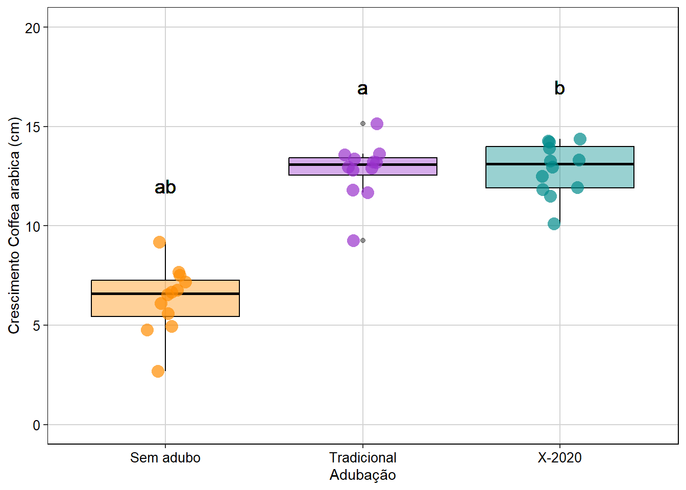
Figure 7.12: Gráfico de caixa mostrando o resultado da ANOVA de um fator.
Interpretação dos resultados
Neste exemplo, os indivíduos de C. arabica que receberam adubação (tradicional e X-2020) apresentaram maior crescimento do que os indivíduos que não receberam adubação. Contudo, diferente do que foi divulgado pela empresa, o adubo X-2020 não apresentou melhor desempenho que o adubo tradicional já utilizado pelos produtores.
7.6.2 ANOVA com dois fatores ou ANOVA fatorial
Este teste considera delineamentos amostrais com dois fatores (ou tratamentos) que podem ser compostos por dois ou mais grupos (ou níveis). Esta análise tem uma vantagem, pois permite avaliar o efeito da interação entre os fatores na variável resposta. Quando a interação está presente, o impacto de um fator depende do nível (ou grupo) do outro fator.
Exemplo prático 1 - ANOVA com dois fatores
Explicação dos dados
Neste exemplo hipotético, avaliaremos se o tempo que o corpo leva para eliminar uma droga utilizada em exames de ressonância magnética está relacionado com o sistema XY de determinação do sexo e/ou com a idade dos pacientes. Para isso, foi realizado um experimento com 40 pacientes distribuídos da seguinte maneira: i) 10 indivíduos XX - jovens, ii) 10 indivíduos XX - idosas, iii) 10 indivíduos XY - jovens, e iv) 10 indivíduos XY - idosos.
Pergunta
- O tempo de eliminação da droga é dependente do sistema XY de determinação do sexo e idade dos pacientes?
Predições
- O tempo de eliminação da droga vai ser mais rápido nos pacientes XX e jovens
Variáveis
- data frame com os pacientes (unidade amostral) nas linhas e o tempo de eliminação da droga (variável resposta) e os tratamentos sexo e idade dos pacientes (variáveis preditoras) nas colunas
Checklist
- Verificar se o seu data frame está com as unidades amostrais nas linhas e as variáveis preditoras e respostas nas colunas
Análise
Verificando os dados usando a função head().
## Cabeçalho dos dados
head(dados_dois_fatores)
#> Tempo Pessoas Idade
#> 1 18.952 XX Jovem
#> 2 16.513 XX Jovem
#> 3 17.981 XX Jovem
#> 4 21.371 XX Jovem
#> 5 14.470 XX Jovem
#> 6 19.130 XX JovemCódigos para realizar a ANOVA com dois fatores.
## Análise Anova de dois fatores
# A interação entre os fatores é representada por *
Modelo1 <- aov(Tempo ~ Pessoas * Idade, data = dados_dois_fatores)
# Olhando os resultados
anova(Modelo1)
#> Analysis of Variance Table
#>
#> Response: Tempo
#> Df Sum Sq Mean Sq F value
#> Pessoas 1 716.72 716.72 178.8538
#> Idade 1 1663.73 1663.73 415.1724
#> Pessoas:Idade 1 4.77 4.77 1.1903
#> Residuals 36 144.26 4.01
#> Pr(>F)
#> Pessoas 1.56e-15 ***
#> Idade < 2.2e-16 ***
#> Pessoas:Idade 0.2825
#> Residuals
#> ---
#> Signif. codes:
#> 0 '***' 0.001 '**' 0.01 '*' 0.05 '.' 0.1 ' ' 1Percebam que a interação não apresenta um efeito significativo (P > 0.05). Assim, iremos retirar a interação e verificar, usando Likelihood-ratio test, se o modelo mais simples é melhor.
# Criando modelo sem interação.
Modelo2 <- aov(Tempo ~ Pessoas + Idade, data = dados_dois_fatores)
## LRT
lrtest(Modelo1, Modelo2)
#> Likelihood ratio test
#>
#> Model 1: Tempo ~ Pessoas * Idade
#> Model 2: Tempo ~ Pessoas + Idade
#> #Df LogLik Df Chisq Pr(>Chisq)
#> 1 5 -82.413
#> 2 4 -83.063 -1 1.3012 0.254Analisando o resultado do teste (P > 0.05), a interação não é importante. Então podemos seguir com o modelo mais simples. Vamos verificar a normalidade e homogeneidade da variância (Figura 7.13).
# Verificando as premissas do teste.
plot_grid(plot_model(Modelo2, type = "diag"))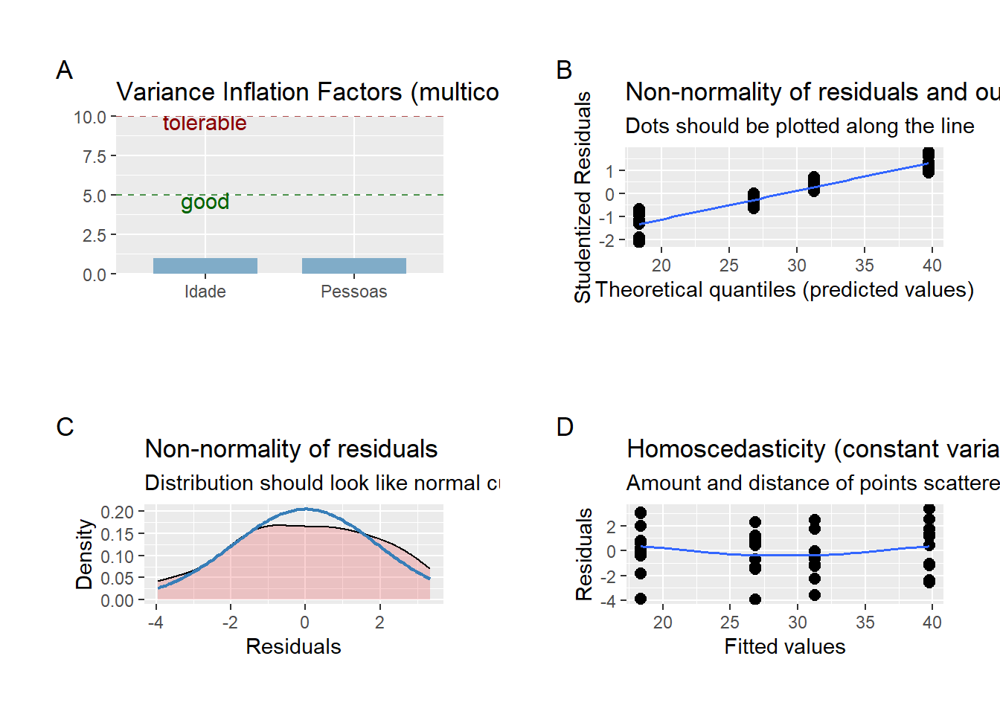
Figure 7.13: Gráficos mostrando as premissas da ANOVA fatorial.
Dois pontos estão fugindo da reta e chamam atenção sobre a normalidade da distribuição dos resíduos. A homogeneidade da variância está adequada. Por enquanto, vamos seguir a análise, mas veja o Capítulo ?? para entender como lidar com modelos que os resíduos não apresentam distribuição normal.
# Resultados do modelo
anova(Modelo2)
#> Analysis of Variance Table
#>
#> Response: Tempo
#> Df Sum Sq Mean Sq F value Pr(>F)
#> Pessoas 1 716.72 716.72 177.94 1.041e-15
#> Idade 1 1663.73 1663.73 413.05 < 2.2e-16
#> Residuals 37 149.03 4.03
#>
#> Pessoas ***
#> Idade ***
#> Residuals
#> ---
#> Signif. codes:
#> 0 '***' 0.001 '**' 0.01 '*' 0.05 '.' 0.1 ' ' 1Percebam que o resultado da ANOVA (Pr(>F) < 0.001) indica que devemos rejeitar a hipótese nula de que não há diferença entre as médias do sistema XY e idade dos pacientes. Neste caso, não precisamos realizar testes de comparações múltiplas post-hoc porque os fatores apresentam apenas dois níveis. Contudo, se no seu delineamento experimental um dos fatores apresentar três ou mais níveis, você deverá utilizar os testes de comparações post-hoc para determinar as diferenças entre os grupos.
Vamos visualizar os resultados em gráfico (Figura 7.14).
## Gráfico
ggplot(data = dados_dois_fatores_interacao,
aes(y = Tempo, x = Pessoas, color = Idade)) +
geom_boxplot() +
stat_summary(fun = mean, geom ="point", aes(group = Idade, x = Pessoas),
color = "black",
position = position_dodge(0.7), size = 4) +
geom_link(aes(x = 0.8, y = 31, xend = 1.8, yend = 40), color = "darkorange",
lwd = 1.3, linetype = 2) +
geom_link(aes(x = 1.2, y = 19, xend = 2.2, yend = 26.5),
color = "cyan4", lwd = 1.3, linetype = 2) +
labs(x = "Sistema XY de determinação do sexo",
y = "Tempo (horas) para eliminar a droga") +
scale_color_manual(values = c("darkorange", "cyan4", "darkorange", "cyan4")) +
scale_y_continuous(limits = c(10, 50), breaks = c(10, 20, 30, 40, 50)) +
tema_livro() 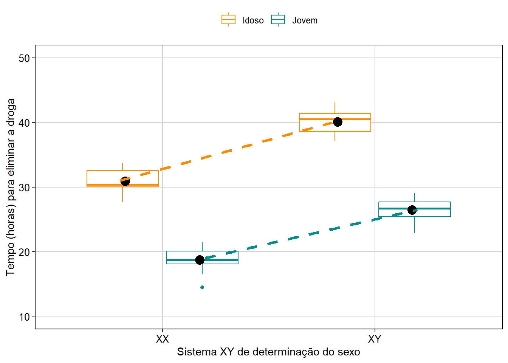
Figure 7.14: Gráfico de caixa mostrando o resultado da ANOVA fatorial.
Interpretação dos resultados
Neste exemplo, o sistema XY de determinação do sexo e a idade dos pacientes têm um efeito no tempo de eliminação da droga do organismo. Os pacientes XX e jovens apresentaram eliminação mais rápida da droga do que pacientes XY e idosos.
Exemplo prático 2 - ANOVA com dois fatores com efeito da interação
Explicação dos dados
Neste exemplo, novamente hipotético, usaremos os mesmos dados do exemplo anterior. Entretanto, alteramos os dados para que agora a interação seja significativa.
## Olhando os dados
head(dados_dois_fatores_interacao2)
#> Tempo Pessoas Idade
#> 1 18.952 XX Jovem
#> 2 16.513 XX Jovem
#> 3 17.981 XX Jovem
#> 4 21.371 XX Jovem
#> 5 14.470 XX Jovem
#> 6 19.130 XX Jovem
## Análise anova de dois fatores
Modelo_interacao2 <- aov(Tempo ~ Pessoas * Idade,
data = dados_dois_fatores_interacao2)
## Olhando os resultados
anova(Modelo_interacao2)
#> Analysis of Variance Table
#>
#> Response: Tempo
#> Df Sum Sq Mean Sq F value
#> Pessoas 1 716.72 716.72 178.8538
#> Idade 1 4.77 4.77 1.1903
#> Pessoas:Idade 1 1663.73 1663.73 415.1724
#> Residuals 36 144.26 4.01
#> Pr(>F)
#> Pessoas 1.56e-15 ***
#> Idade 0.2825
#> Pessoas:Idade < 2.2e-16 ***
#> Residuals
#> ---
#> Signif. codes:
#> 0 '***' 0.001 '**' 0.01 '*' 0.05 '.' 0.1 ' ' 1Percebam que a interação é significativa (P < 0.05), mas a idade não é significativa. Nossa interpretação precisa ser baseada na interação entre os fatores. Vamos visualizar os resultados em gráfico (Figura 7.15).
## Gráfico
ggplot(data = dados_dois_fatores_interacao2,
aes(y = Tempo, x = Pessoas, color = Idade)) +
geom_boxplot() +
stat_summary(fun = mean, geom ="point", aes(group = Idade, x = Pessoas),
color = "black", position = position_dodge(0.7), size = 4) +
geom_link(aes(x = 0.8, y = 31, xend = 1.8, yend = 27), color = "darkorange",
lwd = 1.3, linetype = 2) +
geom_link(aes(x = 1.2, y = 19, xend = 2.2, yend = 41), color = "cyan4",
lwd = 1.3, linetype = 2) +
labs(x = "Sistema XY de determinação do sexo",
y = "Tempo (horas) para eliminar a droga") +
scale_color_manual(values = c("darkorange", "cyan4", "darkorange", "cyan4")) +
scale_y_continuous(limits = c(10, 50), breaks = c(10, 20, 30, 40, 50)) +
tema_livro() 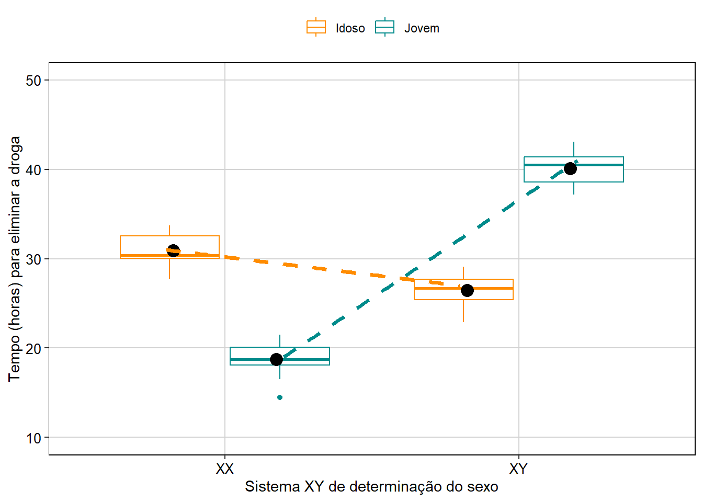
Figure 7.15: Gráfico de caixa mostrando o resultado da ANOVA fatorial com interação.
Interpretação dos resultados
Percebam que as linhas se cruzam. Esse é um exemplo clássico de interação. Novamente, para saber a resposta do fator idade (jovem ou idoso), você precisa saber com qual pessoa (XX ou XY) ele está associado. Jovens são mais rápidos para eliminarem a droga em pessoas XX, enquanto os idosos são mais rápidos para eliminarem a droga nas pessoas XY.
7.6.3 ANOVA em blocos aleatorizados
No delineamento experimental com blocos aleatorizados, cada fator é agrupado em blocos, com réplicas de cada nível do fator representado em cada bloco (Gotelli and Ellison 2012). O bloco é uma área ou período de tempo dentro do qual as condições ambientais são relativamente homogêneas. O objetivo do uso dos blocos é controlar fontes de variações indesejadas na variável dependente que não são de interesse do pesquisador. Desta maneira, podemos retirar dos resíduos os efeitos das variações indesejadas que não são do nosso interesse, e testar com maior poder estatístico os efeitos dos tratamentos de interesse.
📝 Importante
Os blocos devem ser arranjados de forma que as condições ambientais sejam mais similares dentro dos blocos do que entre os blocos.
Exemplo prático 1 - ANOVA em blocos aleatorizados
Explicação dos dados
Neste exemplo, avaliaremos a riqueza de espécies de anuros amostradas em poças artificiais instaladas a diferentes distâncias de seis fragmentos florestais no sudeste do Brasil (da Silva et al. 2012). Os fragmentos florestais apresentam diferenças entre si que não são do interesse do pesquisador. Por isso, eles foram incluídos como blocos nas análises. As poças artificiais foram instaladas em todos os fragmentos florestais com base no seguinte delineamento experimental (da Silva et al. 2012): i) quatro poças no interior do fragmento a 100 m de distância da borda do fragmento; ii) quatro poças no interior no fragmento a 50 m de distância da borda do fragmento; iii) quatro poças na borda do fragmento; iv) quatro poças na matriz de pastagem a 50 m de distância da borda do fragmento; e v) quatro poças na matriz de pastagem a 100 m de distância da borda do fragmento. Percebam que todos os tratamentos foram instalados em todos os blocos.
📝 Importante
Os valores da riqueza de espécies foram alterados em relação a publicação original (da Silva et al. 2012) para deixar o exemplo mais didático.
Pergunta
- A distância da poça artificial ao fragmento florestal influencia a riqueza de espécies anuros?
Predições
- Poças na borda do fragmento florestal apresentarão maior riqueza de espécies do que poças distantes da borda
Variáveis
- Data frame com as poças (unidade amostral) nas linhas e a riqueza de espécies (variável reposta), distância dos fragmentos florestais (variável preditora categórica) e fragmentos florestais (blocos) nas colunas
Checklist
- Verificar se o seu data frame está com as unidades amostrais nas linhas e variáveis preditoras e respostas nas colunas
Análise
Olhando os dados usando a função head().
## Cabeçalho dos dados
head(dados_bloco)
#> Riqueza Blocos Pocas
#> 1 90 A Int-50m
#> 2 95 A Int-100m
#> 3 107 A Borda
#> 4 92 A Mat-50m
#> 5 89 A Mat-100m
#> 6 92 B Int-50mAnálise da ANOVA em blocos.
## Análise Anova em blocos aleatorizados
model_bloco <- aov(Riqueza ~ Pocas + Error(Blocos), data = dados_bloco)
summary(model_bloco)
#>
#> Error: Blocos
#> Df Sum Sq Mean Sq F value Pr(>F)
#> Residuals 5 1089 217.8
#>
#> Error: Within
#> Df Sum Sq Mean Sq F value Pr(>F)
#> Pocas 4 1504 376.1 2.907 0.0478 *
#> Residuals 20 2588 129.4
#> ---
#> Signif. codes:
#> 0 '***' 0.001 '**' 0.01 '*' 0.05 '.' 0.1 ' ' 1Lembre-se que nos delineamentos experimentais em bloco, o pesquisador não está interessado no efeito do bloco, mas sim em controlar a variação associada a ele.
O que não pode acontecer é ignorar o efeito do bloco que é incorporado pelos resíduos quando não informado no modelo. Veja abaixo a forma errada de analisar delineamento experimental com blocos.
## Forma errada de análisar Anova em blocos
modelo_errado <- aov(Riqueza ~ Pocas, data = dados_bloco)
anova(modelo_errado)
#> Analysis of Variance Table
#>
#> Response: Riqueza
#> Df Sum Sq Mean Sq F value Pr(>F)
#> Pocas 4 1504.5 376.12 2.5576 0.06359 .
#> Residuals 25 3676.5 147.06
#> ---
#> Signif. codes:
#> 0 '***' 0.001 '**' 0.01 '*' 0.05 '.' 0.1 ' ' 1O resultado da ANOVA (Pr(>F) < 0.001) indica que devemos rejeitar a hipótese nula que não há diferença entre as médias dos grupos. Contudo, os resultados não mostram quais são os grupos que apresentam diferenças. Para isso, temos que realizar testes de comparações múltiplas post-hoc para detectar os grupos que apresentam diferenças significativas entre as médias.
## Teste de Tuckey's honest significant difference
pairs(lsmeans(model_bloco, "Pocas"), adjust = "tukey")
#> contrast estimate SE df
#> Borda - (Int-100m) 16.000 6.57 20
#> Borda - (Int-50m) 19.833 6.57 20
#> Borda - (Mat-100m) 15.833 6.57 20
#> Borda - (Mat-50m) 8.167 6.57 20
#> (Int-100m) - (Int-50m) 3.833 6.57 20
#> (Int-100m) - (Mat-100m) -0.167 6.57 20
#> (Int-100m) - (Mat-50m) -7.833 6.57 20
#> (Int-50m) - (Mat-100m) -4.000 6.57 20
#> (Int-50m) - (Mat-50m) -11.667 6.57 20
#> (Mat-100m) - (Mat-50m) -7.667 6.57 20
#> t.ratio p.value
#> 2.436 0.1463
#> 3.020 0.0472
#> 2.411 0.1531
#> 1.244 0.7269
#> 0.584 0.9760
#> -0.025 1.0000
#> -1.193 0.7553
#> -0.609 0.9720
#> -1.777 0.4135
#> -1.167 0.7692
#>
#> P value adjustment: tukey method for comparing a family of 5 estimatesVisualizar os resultados em gráfico (Figura 7.16).
# Reordenando a ordem que os grupos irão aparecer no gráfico.
dados_bloco$Pocas <- factor(dados_bloco$Pocas,
levels = c("Int-100m", "Int-50m", "Borda", "Mat-50m", "Mat-100m"))
## Gráfico
ggplot(data = dados_bloco, aes(x = Pocas, y = Riqueza)) +
labs(x = "Poças artificiais", y = "Riqueza de espécies de anuros") +
geom_boxplot(color = "black", show.legend = FALSE, alpha = 0.4) +
geom_jitter(shape = 16, position = position_jitter(0.1), cex = 4, alpha = 0.7) +
scale_x_discrete(labels = c("-100m","-50m","Borda", "50m", "100m")) +
tema_livro() +
theme(legend.position = "none") 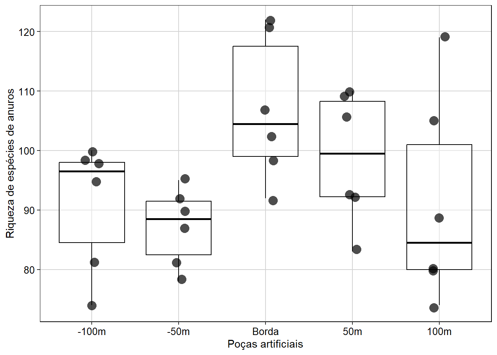
Figure 7.16: Gráfico de caixa mostrando o resultado da ANOVA de blocos aleatorizados.
Interpretação dos resultados
Neste exemplo, rejeitamos a hipótese nula de que a distância das poças artificiais até as bordas dos fragmentos florestais não influência a riqueza de espécies de anuros. As poças artificiais instaladas nas bordas dos fragmentos florestais apresentaram maior riqueza de espécies do que as poças distantes.
7.6.4 Análise de covariância (ANCOVA)
A ANCOVA pode ser compreendida como uma extensão da ANOVA com a adição de uma variável contínua (covariável) medida em todas as unidades amostrais (Gotelli and Ellison 2012). A ideia é que a covariável também afete os valores da variável resposta. Não incluir a covariável irá fazer com que a variação não explicada pelo modelo se concentre nos resíduos. Incluindo a covariável, o tamanho do resíduo é menor e o teste para avaliar as diferenças nos tratamentos, que é o interesse do pesquisador, terá mais poder estatístico.
Exemplo prático 1 - ANCOVA
Explicação dos dados
Neste exemplo hipotético, avaliaremos o efeito da herbivoria na biomassa dos frutos de uma espécie de árvore na Mata Atlântica. O delineamento experimental permitiu que alguns indivíduos sofressem herbivoria e outros não. Os pesquisadores também mediram o tamanho da raiz dos indivíduos para inseri-la como uma covariável no modelo.
Pergunta
- A herbivoria diminui a biomassa dos frutos?
Predições
- Os indivíduos que sofreram herbivoria irão produzir frutos com menor biomassa do que os indivíduos sem herbivoria
Variáveis
- data frame com os indivíduos da espécie de planta (unidade amostral) nas linhas e a biomassa dos frutos (variável resposta), herbivoria (variável preditora categórica) e tamanho da raiz (covariável contínua) nas colunas
Checklist
- Verificar se o seu data frame está com as unidades amostrais nas linhas e variáveis preditoras e respostas nas colunas
Análise
Olhando os dados usando a função head().
## Cabeçalho dos dados
head(dados_ancova)
#> Raiz Biomassa Herbivoria
#> 1 6.225 59.77 Sem_herb
#> 2 6.487 60.98 Sem_herb
#> 3 4.919 14.73 Sem_herb
#> 4 5.130 19.28 Sem_herb
#> 5 5.417 34.25 Sem_herb
#> 6 5.359 35.53 Sem_herbCódigos para o cálculo da ANCOVA (Figura 7.17).
## Ancova
modelo_ancova <- lm(Biomassa ~ Herbivoria * Raiz, data = dados_ancova)
# Verificando as premissas da Ancova
plot_grid(plot_model(modelo_ancova, type = "diag"))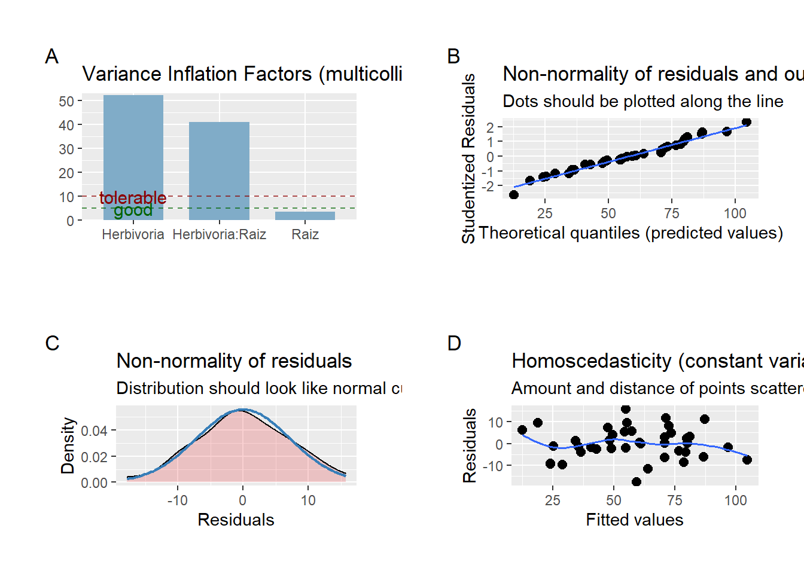
Figure 7.17: Gráficos de diagnóstico dos resíduos da ANCOVA.
As premissas da ANCOVA estão adequadas. Vamos olhar os resultados do modelo.
## Resultados do modelo
anova(modelo_ancova)
#> Analysis of Variance Table
#>
#> Response: Biomassa
#> Df Sum Sq Mean Sq F value
#> Herbivoria 1 1941.9 1941.9 35.101
#> Raiz 1 17434.1 17434.1 315.124
#> Herbivoria:Raiz 1 136.7 136.7 2.471
#> Residuals 36 1991.7 55.3
#> Pr(>F)
#> Herbivoria 8.764e-07 ***
#> Raiz < 2.2e-16 ***
#> Herbivoria:Raiz 0.1247
#> Residuals
#> ---
#> Signif. codes:
#> 0 '***' 0.001 '**' 0.01 '*' 0.05 '.' 0.1 ' ' 1Percebam que o resultado da ANCOVA (Pr(>F) < 0.001) indica que tanto a herbivoria como o tamanho da raiz (covariável) têm efeitos significativos na biomassa dos frutos. Contudo, a interação entre as variáveis não foi significativa. Vamos usar o Likelihood-ratio test para ver se podemos seguir com um modelo mais simples (sem interação).
## Criando modelo sem interação
modelo_ancova2 <- lm(Biomassa ~ Herbivoria + Raiz, data = dados_ancova)
## Likelihood-ratio test
lrtest(modelo_ancova, modelo_ancova2)
#> Likelihood ratio test
#>
#> Model 1: Biomassa ~ Herbivoria * Raiz
#> Model 2: Biomassa ~ Herbivoria + Raiz
#> #Df LogLik Df Chisq Pr(>Chisq)
#> 1 5 -134.91
#> 2 4 -136.24 -1 2.6554 0.1032A interação não é importante, pois P > 0.05. Seguiremos com o modelo mais simples.
Vamos fazer a visualizar os resultados em gráfico (Figura 7.18).
## Gráfico
ggplot(data = dados_ancova, aes(x = Raiz, y = Biomassa, fill = Herbivoria)) +
labs(x = "Tamanho da raiz (cm)", y = "Biomassa dos frutos (g)") +
geom_point(size = 4, shape = 21, alpha = 0.7) +
scale_colour_manual(values = c("darkorange", "cyan4")) +
scale_fill_manual(values = c("darkorange", "cyan4"),
labels = c("Com herbivoria", "Sem herbivoria")) +
geom_smooth(aes(color = Herbivoria), method = "lm", show.legend = FALSE) +
tema_livro()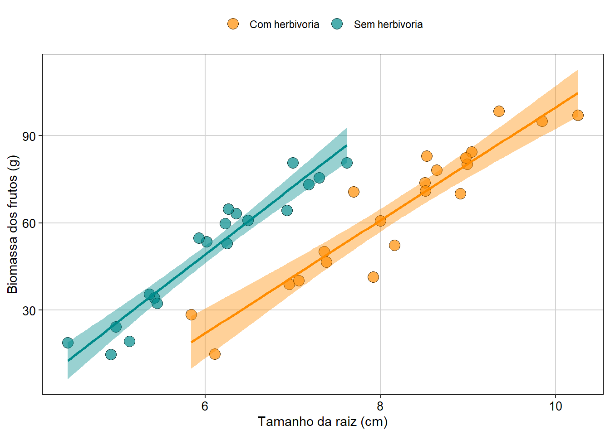
Figure 7.18: Gráfico de caixa mostrando o resultado da ANCOVA.
Interpretação dos resultados
Neste exemplo, o tamanho da raiz (covariável) tem uma relação positiva com a biomassa dos frutos. Quanto maior o tamanho da raiz, maior a biomassa dos frutos. Usando a ANCOVA e controlando o efeito da covariável, percebemos que a herbivoria também afeta a biomassa dos frutos. Os indivíduos com o mesmo tamanho de raiz que não sofreram herbivoria produziram frutos com maior biomassa do que os indivíduos com herbivoria.
7.7 Generalized Least Squares (GLS)
Em seu artigo clássico publicado em 1993, Pierre Legendre se pergunta se a autocorrelação espacial é um problema ou um novo paradigma (Legendre 1993). Segundo o autor, estudar estruturas espaciais é tanto uma necessidade, quanto um desafio para pesquisadores da ecologia e conservação que lidam com dados espacialmente distribuídos. Uma vez que todas as variáveis tipicamente utilizadas em estudos de biodiversidade (populações, condições climáticas, diversidade) possuem algum tipo de estrutura espacial, é fundamental compreender os motivos de como incluir esta informação nos modelos analíticos. De fato, a Primeira Lei da Geografia postula que “todas as coisas estão relacionadas com todas as outras, porém coisas próximas estão mais relacionadas do que coisas distantes”. Como resultado, os valores observados em uma localidade (e.g., composição de espécies) serão mais afetados pelo conjunto de espécies que ocorre nas localidades vizinhas e, desse modo, alguns pontos de coleta podem não ser estatisticamente independentes. Como vimos anteriormente, um dos pressupostos dos modelos lineares é a independência das unidades amostrais. Assim, a presença de autocorrelação espacial nos resíduos viola este pressuposto e, consequentemente, aumenta a taxa de Erro do Tipo I (rejeitar a hipótese nula quando ela é verdadeira) nos modelos. Uma das soluções para incorporar a dependência espacial dos resíduos é usar o método de Mínimos Quadrados Generalizados (Generalized Least Squares - GLS). Diferente dos modelos apresentados anteriormente, este método ajusta explicitamente modelos heteroscedásticos e com resíduos correlacionados (Pinheiro and Bates 2000). Para representar a estrutura espacial (e, assim, a dependência entre as observações) é necessário incluir variáveis espaciais (geralmente coordenadas geográficas, i.e., vetores bidimensionais: sensu Pinheiro and Bates (2000)) no argumento corStruct na função gls() do pacote nlme. Este modelo basicamente assume que a estrutura de covariância é uma função da distância entre as localidades (Littell et al. 2006). É importante ressaltar, todavia, que existem diferentes funções de covariância que são discutidas detalhadamente em Littell et al. (2006). Aqui, iremos nos
concentrar nas seguintes funções.
-
Esférica:
corSpher(form=\~lat+long) -
Exponencial:
corExp(form=\~lat+long) -
Gaussiana:
corGaus(form=\~lat+long) -
Linear:
corLin(form=\~lat+long) -
Razão quadrática:
corRatio(form=\~lat+long)
Exemplo prático 1 - GLS
Explicação dos dados
Neste exemplo, utilizamos os dados de riqueza de espécies de ácaros (Oribatidae) em 70 amostras de musgo (gênero Sphagnum) (Borcard et al. 1992). Para cada amostra, além da riqueza de ácaros, os autores registraram a quantidade de água no substrato e as coordenadas geográficas. Os dados completos estão disponíveis no pacote vegan.
## Calcular a riqueza de espécies em cada comunidade
riqueza <- specnumber(mite)
## Selecionar a variável ambiental - quantidade de água no substrato
agua <- mite.env[,2]
## Criar um data.frame com riqueza, quantidade de água no substrato e coordenadas geográficas
mite_dat <- data.frame(riqueza, agua, coords)Modelo linear sem incorporar a estrutura espacial
Vamos inicialmente ajustar um modelo sem incorporar a estrutura espacial (Figura 7.19).
## Modelo
linear_model <- lm(riqueza ~ agua, mite_dat)
## Resíduos
par(mfrow = c(2, 2))
plot(linear_model, which = 1:4)
## Resultados do modelo
res_lm <- summary(linear_model)
## Coeficiente de determinação e coeficientes
res_lm$adj.r.squared
#> [1] 0.4632024
res_lm$coefficients
#> Estimate Std. Error t value
#> (Intercept) 24.3040255 1.249094710 19.45731
#> agua -0.0223793 0.002876239 -7.78075
#> Pr(>|t|)
#> (Intercept) 1.687907e-29
#> agua 5.481035e-11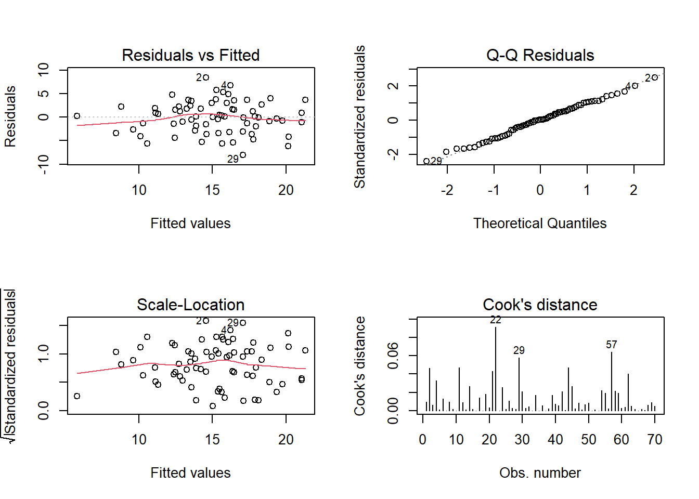
Figure 7.19: Gráficos mostrando as premissas da regressão linear simples.
Acessando a informação espacial com o GLS
Como dito, dependendo da estrutura espacial de suas variáveis (dependentes, independentes, covariáveis), o pressuposto de independência dos resíduos pode ser afetado e, desse modo, o modelo linear convencional terá maior chance de Erro do Tipo I. Abaixo, iremos comparar um modelo GLS sem incorporar estrutura espacial (o que é exatamente igual ao modelo criado acima Modelo Linear) com diferentes modelos que utilizam explicitamente resíduos correlacionados.
## Modelo gls sem estrutura espacial
no_spat_gls <- gls(riqueza ~ agua, mite_dat, method = "REML")Uma maneira de identificar se os resíduos do modelo linear apresentam estrutura espacial é fazendo uma figura chamada variograma. O variograma possui três parâmetros: i) nugget, ii) range e iii) sill (Fortin and Dale 2005). O nugget é utilizado para quantificar a variabilidade observada nos valores menores (ou seja, em pequenas distâncias). O range, por sua vez, é usado para identificar a distância máxima em que a autocorrelação espacial está presente (Figura 7.20, pontos laranjas). Deste modo, os valores posicionados a partir do range (Figura 7.20, pontos verdes) representam pontos não correlacionados (Fortin and Dale 2005). A posição limiar que representa claramente a “pausa” no crescimento da curva (range) indica os pontos não correlacionados e representa o sill (Figura 7.20). No exemplo da Figura 7.20, o sill é constante. Porém, é possível que os valores de sill não sejam constantes (Chiles and Delfiner 1999). Um exemplo é o “efeito buraco” que é caracterizado por um ou mais picos (ou vales) no variograma que correspondem ao número de valores negativos na covariância. Esses valores sugerem que valores altos podem estar rodeados de valores baixos (Chiles and Delfiner 1999). Porém, os detalhamentos desses comportamentos vão além do escopo deste livro.
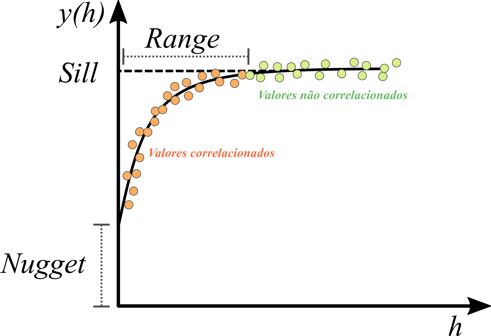
Figure 7.20: Variograma representando a semi-variância y(h) em função do intervalor espacial h. Cada ponto representa a distância entre localidades e a linha a variação teórica a função de covariância esférica (veja abaixo). Adaptado de: Fortin & Dale (2005).
Abaixo, podemos analisar o variograma para os resíduos do modelo GLS ajustado (Figura 7.21).
## Variograma
variog_mod1 <- nlme::Variogram(no_spat_gls, form = ~lat+long,
resType = "normalized")
## Gráfico
plot(variog_mod1)
## Índice I de Moran
## Primeiro precisamos calcular uma matriz de distâncias geográficas entre as comunidades
dat_dist <- pdist(coords) # matriz de distância
Moran.I(x = mite_dat$riqueza, w = dat_dist)
#> $observed
#> [1] -0.2398147
#>
#> $expected
#> [1] -0.01449275
#>
#> $sd
#> [1] 0.009971923
#>
#> $p.value
#> [1] 4.783614e-113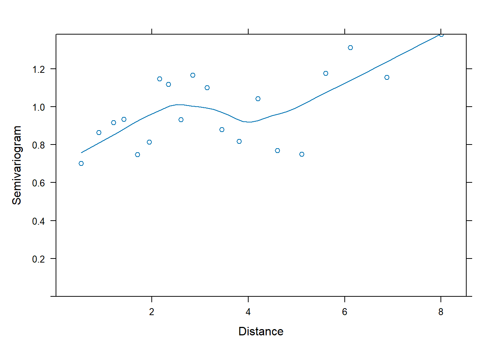
Figure 7.21: Variograma para os resíduos do modelo GLS ajustado.
O primeiro passo é utilizar diferentes variogramas teóricos para identificar o melhor modelo que representa a estrutura espacial dos seus dados.
## Covariância esférica
espher_model <- gls(riqueza ~ agua, mite_dat,
corSpher(form = ~lat+long, nugget = TRUE))
## Covariância exponencial
expon_model <- gls(riqueza ~ agua, mite_dat,
corExp(form = ~lat+long, nugget = TRUE))
## Covariância Gaussiana
gauss_model <- gls(riqueza ~ agua, mite_dat,
corGaus(form = ~lat+long, nugget = TRUE))
## Covariância linear
cor_linear_model <- gls(riqueza ~ agua, mite_dat,
corLin(form = ~lat+long, nugget = TRUE))
## Covariância razão quadrática
ratio_model <- gls(riqueza ~ agua, mite_dat,
corRatio(form = ~lat+long, nugget = TRUE))Agora, depois de ajustar o modelo GLS com os diferentes variogramas é necessário comparar os modelos para escolher o mais “provável”, utilizando a seleção de modelos pelo Critério de Seleção de Akaike (AIC) (Chiles and Delfiner 1999; Burnham and Anderson 2002; Fortin and Dale 2005) (Figura 7.22). AIC é um método estatístico que compara os modelos criados na sua pesquisa e seleciona o melhor entre eles. Diferente do LRT que compara apenas modelos aninhados, o AIC compara modelos com diferentes combinações de variáveis preditoras. Uma vez que a fórmula do AIC penaliza parâmetros extras no modelo, se dois modelos explicam igualmente a variação dos dados, o modelo com menos parâmetros terá o menor valor de AIC e será selecionado como o melhor modelo.
📝 Importante
O valor de AIC por si só não tem significado. Ele precisa ser comparado com outro modelo. Contudo, um modelo só será considerado superior a outro quando a diferença entre os seus valores de AIC (i.e, delta) forem maiores do que 2. (Burnham and Anderson 2002)
## Seleção de modelos
aic_fit <- AIC(no_spat_gls, espher_model, expon_model, gauss_model, cor_linear_model, ratio_model)
aic_fit %>% arrange(AIC)
#> df AIC
#> 1 5 373.1186
#> 2 5 373.2439
#> 3 3 383.8616
#> 4 5 387.8616
#> 5 5 387.8616
#> 6 5 387.8616
## Gráfico
plot(residuals(ratio_model, type = "normalized") ~ fitted(ratio_model))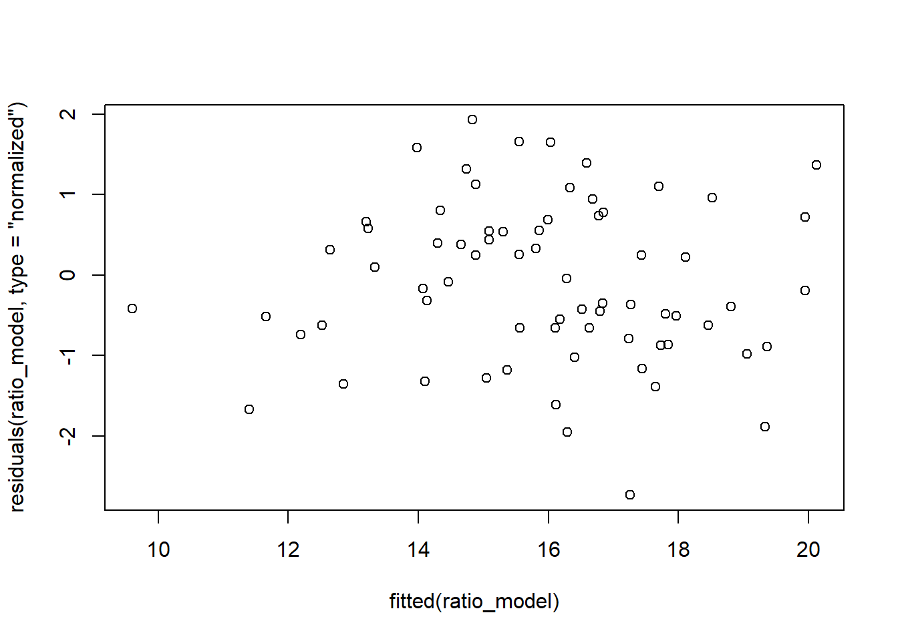
Figure 7.22: Gráfico dos resíduos em relação aos dados ajustados do modelo GLS Ratio.
O variograma ajustado pelo modelo razão quadrática (ratio_model) demonstra que o range não é crescente (indicando correlação espacial entre localidades próximas) e, desse modo, sugere que é mais apropriado usar o modelo GLS do que um modelo linear desconsiderando a estrutura espacial (Figura 7.23).
## Varigrama
ratio_variog <- Variogram(ratio_model, form = ~lat+long, resType = "normalized")
## Resumo dos modelos
summary(ratio_model)$tTable
#> Value Std.Error t-value
#> (Intercept) 22.1612850 2.444329887 9.066405
#> agua -0.0151894 0.003505891 -4.332536
#> p-value
#> (Intercept) 2.561826e-13
#> agua 4.976757e-05
summary(no_spat_gls)$tTable
#> Value Std.Error t-value
#> (Intercept) 24.3040255 1.249094710 19.45731
#> agua -0.0223793 0.002876239 -7.78075
#> p-value
#> (Intercept) 1.687907e-29
#> agua 5.481035e-11
## Gráficos
plot(ratio_variog, main = "Variograma como Modelo Ratio")
plot(variog_mod1, main = "Variograma Modelo Normal")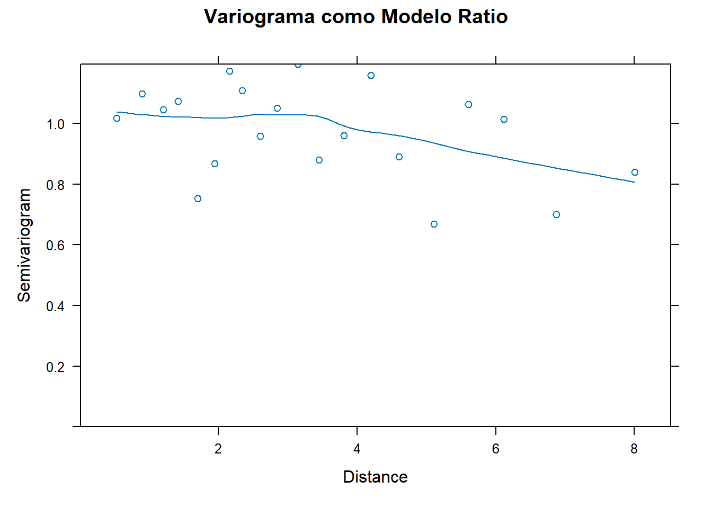
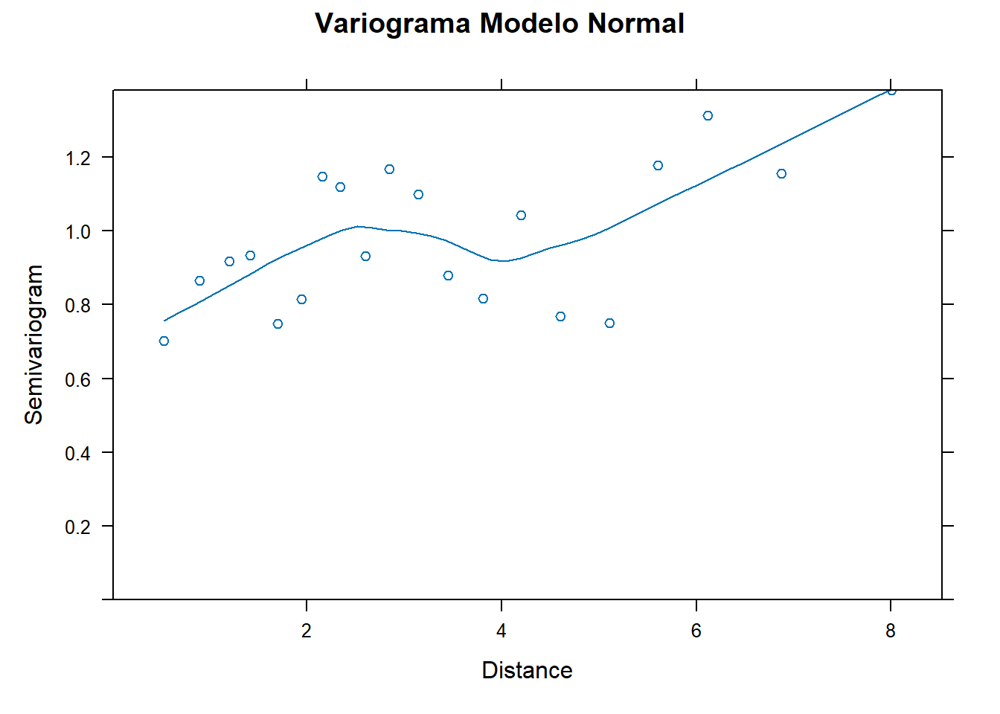
Figure 7.23: Variogramas para os resíduos do modelo GLS Normal e Ratio.
Interpretação dos resultados
Dessa forma, o valor mais apropriado da estatística t é de -4.33 (ratio_model) ao invés de -7.78 (no_spat_gls). Neste caso, a decisão (quantidade de água afetando a riqueza de ácaros) não foi afetada (P < 0.05 nos dois modelos), somente a estatística do teste.
7.8 Para se aprofundar
Listamos a seguir livros e links que recomendamos para seguir com sua aprendizagem em modelos lineares
7.8.1 Livros
Recomendamos aos interessados(as) os livros: i) Zar (2010) Biostatiscal analysis, ii) Gotelli & Ellison (2012) A primer of ecological statistics, iii) Quinn & Keough (2002) Experimental design and data analysis for biologists, iv) Zuur e colabodores (2007) Analysing Ecological Data e v) Touchon (2021) Applied statistics with R: a practical guide for the life sciences.
7.8.2 Links
Recomendamos a página Curso de Estatística para Pesquisa Científica[http://estat.bio.br/] do pesquisador Thiago Rangel, Universidade Federal de Goiás. Nesta página, vocês irão encontrar exemplos e explicações detalhadas sobre as análises e a filosofia estatística.
7.9 Exercícios
7.1
Avalie se os indivíduos machos de uma espécie de aranha são maiores do que as fêmeas. Qual a sua interpretação sobre o dimorfismo sexual nesta espécie? Faça um gráfico boxplot usando também a função geom_jitter(). Use os dados Cap7_exercicio1 disponível no pacote ecodados.
7.2
Avalie se o número de polinizadores visitando uma determinada espécie de planta é dependente da presença ou ausência de predadores. A mesma planta, em tempos diferentes, foi utilizada como unidade amostral para os tratamentos com e sem predadores. Qual a sua interpretação sobre os resultados? Faça um gráfico boxplot ligando os resultados da mesma planta com e sem a presença do predador. Use os dados Cap7_exercicio2 disponível no pacote ecodados.
7.3
Avalie se existe correlação entre o número de filhotes nos ninhos de uma espécie de ave com o tamanho do fragmento florestal. Qual a sua interpretação dos resultados? Faça um gráfico mostrando a relação entre as variáveis. Use os dados Cap7_exercicio3 disponível no pacote ecodados.
7.4
Avalie se a relação entre o tamanho da área de diferentes ilhas e a riqueza de espécies de lagartos. Qual a sua interpretação dos resultados? Faça um gráfico mostrando a relação predita pelo modelo. Use os dados Cap7_exercicio4 disponível no pacote ecodados.
7.5
Avalie se existe relação entre a abundância de uma espécie de roedor com o tamanho da área dos fragmentos florestais e/ou a altitude. Faça uma regressão múltipla. Em seguida, crie diferentes modelos e selecione o mais parcimonioso com base nos valores do teste de Likelihood-ratio test (LRT) e Akaike information criterion (AIC). Qual a sua interpretação? Use os dados Cap7_exercicio5 disponível no pacote ecodados.
7.6
Avalie se o local que machos territoriais ocupam (pasto, cana, floresta) influência no peso dos indivíduos. Qual a sua interpretação dos resultados? Faça um gráfico com os resultados. Use os dados Cap7_exercicio6 disponível no pacote ecodados.
7.7
Avalie se a abundância de formigas está relacionada com o fato das domácias estarem abertas ou fechadas e com a idade das domácias. Verifique a interação entre os fatores. Qual a sua interpretação dos resultados? Faça um gráfico com os resultados. Use os dados Cap7_exercicio7 disponível no pacote ecodados.
7.8
Avalie se o número de parasitas está relacionado com o tamanho corporal de fêmeas de uma espécie de ave. Além disso, use a idade das aves como uma covariável explicando o número de parasitas. Qual a sua interpretação dos resultados? Faça um gráfico com os resultados. Use os dados Cap7_exercicio8 disponível no pacote ecodados.
7.9
Avalie se a presença ou ausência de predadores afeta a riqueza de macroinvertebrados em 10 lagos. Os tratamentos dos predadores foram realizados nos mesmos lagos. Qual a sua interpretação dos resultados? Faça um gráfico com os resultados. Use os dados Cap7_exercicio9 disponível no pacote ecodados.
7.10
Avalie se a precipitação anual afeta a riqueza de espécies de anuros em 44 localidades na Mata Atlântica. Use as coordenadas geográficas para controlar o efeito da autocorrelação espacial. Qual a sua interpretação dos resultados das análises com e sem levar em consideração a autocorrelação espacial? Use os dados anuros_ambientais disponível no pacote ecodados.